Documentation Kanbai Kanbai Documentation
Guide complet de toutes les fonctionnalités de Kanbai, votre IDE macOS natif. De l'installation aux workflows avancés avec Claude AI, Codex, Copilot et Gemini, cette documentation couvre chaque outil en détail. Complete guide to all Kanbai features, your native macOS IDE. From installation to advanced workflows with Claude AI, Codex, Copilot and Gemini, this documentation covers every tool in detail.
Démarrage rapide Getting started
Kanbai est un IDE natif (macOS & Windows) qui reunit plus de 15 outils de développement dans une seule fenêtre : Terminal, Claude AI, Codex, Copilot, Gemini, Git, Kanban avec Mode CTO, Packages multi-ecosystème avec IA, TODO Scanner, Statistiques, Prompts, Database Explorer avec chat IA, Code Analysis, API Tester, et bien plus encore. Aucune configuration n'est nécessaire. Les mises à jour sont automatiques. Kanbai is a native IDE (macOS & Windows) that combines over 15 development tools in a single window: Terminal, Claude AI, Codex, Copilot, Gemini, Git, Kanban with CTO Mode, multi-ecosystem Packages with AI, TODO Scanner, Statistics, Prompts, Database Explorer with AI chat, Code Analysis, API Tester, and much more. No configuration needed. Updates are automatic.
Installation Installation
-
Téléchargez le fichier
.dmgdepuis la page des releases GitHub Download the.dmgfile from the GitHub releases page -
Ouvrez le
.dmget glissez Kanbai dans votre dossier/ApplicationsOpen the.dmgand drag Kanbai to your/Applicationsfolder - Au premier lancement, macOS peut demander une autorisation. Cliquez droit sur l'application et sélectionnez "Ouvrir" pour contourner Gatekeeper On first launch, macOS may ask for authorization. Right-click the application and select "Open" to bypass Gatekeeper
- Lancez Kanbai et créez votre premier workspace en pointant vers vos projets Launch Kanbai and create your first workspace by pointing to your projects
Pour profiter des fonctionnalités d'intelligence artificielle, installéz Claude Code avant de lancer Kanbai. Consultez la documentation officielle Claude Code pour les instructions d'installation.To take advantage of AI features, install Claude Code before launching Kanbai. See the official Claude Code documentation for installation instructions.
Configuration requise System requirements
Vue d'ensemble de l'interface Interface overview
L'interface de Kanbai se compose de trois zones principales : Kanbai's interface consists of three main areas:
- Barre latérale gauche — Navigation entre les workspaces, arborescence de fichiers du projet actif, et fichiers récents en accès rapide Left sidebar — Navigate between workspaces, file tree of the active project, and quick-access recent files
- Barre d'outils supérieure — Onglets de navigation entre les vues (Terminal, Claude AI, Git, Kanban, etc.), branche Git active, et scripts NPM rapides Top toolbar — Navigation tabs between views (Terminal, Claude AI, Git, Kanban, etc.), active Git branch, and quick NPM scripts
- Zone de contenu principale — Affiche la vue active sélectionnée dans la barre d'outils Main content area — Displays the active view selected in the toolbar

Vue d'ensemble : barre latérale avec workspaces, onglets de navigation, terminal split avec Claude Code et scripts NPM rapides. Overview: sidebar with workspaces, navigation tabs, split terminal with Claude Code and quick NPM scripts.
Premiers pas First steps tutorial
Voici comment demarrer avec Kanbai en quelques minutes : Here is how to get started with Kanbai in just a few minutes:
- Créez un workspace — Utilisez Cmd+Shift+N ou le bouton "+" dans la barre latérale. Donnez un nom à votre workspace et sélectionnez un ou plusieurs dossiers de projets Create a workspace — Use Cmd+Shift+N or the "+" button in the sidebar. Name your workspace and select one or more project folders
-
Ajoutez vos projets — Un workspace peut contenir plusieurs projets. Kanbai créé un environnement symlinke dans
~/.kanbai/envs/pour un accès unifié Add your projects — A workspace can contain multiple projects. Kanbai creates a symlinked environment in~/.kanbai/envs/for unified access - Ouvrez le terminal — Cliquez sur l'onglet Terminal dans la barre d'outils. Le terminal s'ouvre dans le repertoire du workspace. Utilisez Cmd+D pour diviser en panes Open the terminal — Click the Terminal tab in the toolbar. The terminal opens in the workspace directory. Use Cmd+D to split into panes
- Essayez Claude AI — Cliquez sur le bouton Claude dans la barre d'outils pour lancer une session Claude Code dans un pane dédié. Posez votre premiere question ! Try Claude AI — Click the Claude button in the toolbar to launch a Claude Code session in a dedicated pane. Ask your first question!
Kanbai détecté automatiquement la presence de Git, Claude Code et Makefile dans chaque projet de votre workspace. Les onglets et fonctionnalités correspondants sont actives automatiquement.Kanbai automatically detects the presence of Git, Claude Code and Makefile in each project of your workspace. The corresponding tabs and features are activated automatically.
Workspaces
Les workspaces sont au coeur de Kanbai. Chaque workspace représenté un environnement de travail isole qui peut contenir plusieurs projets. Chaque workspace possède sa propre configuration Claude, son Kanban, ses connexions de base de données et ses scripts. Workspaces are at the heart of Kanbai. Each workspace represents an isolated working environment that can contain multiple projects. Each workspace has its own Claude configuration, Kanban board, database connections and scripts.
Concept central Core concept
Un workspace est un conteneur logique qui regroupe un ou plusieurs projets dans un environnement unifié. Contrairement à un simple dossier, un workspace Kanbai offre une isolation complète : chaque workspace a sa propre configuration Claude, ses propres tickets Kanban, ses propres connexions de base de données et ses propres collections API. A workspace is a logical container that groups one or more projects in a unified environment. Unlike a simple folder, a Kanbai workspace offers complete isolation: each workspace has its own Claude configuration, its own Kanban tickets, its own database connections and its own API collections.
Fonctionnalités Features
Créer un workspace Creating a workspace
- Appuyez sur Cmd+Shift+N ou cliquez sur le bouton "+" en haut de la barre latérale Press Cmd+Shift+N or click the "+" button at the top of the sidebar
- Donnez un nom à votre workspace (par exemple "Backend API" ou "Projet Client X") Name your workspace (for example "Backend API" or "Client Project X")
-
Sélectionnez un ou plusieurs dossiers de projets. Kanbai créé un environnement symlinke dans
~/.kanbai/envs/Select one or more project folders. Kanbai creates a symlinked environment in~/.kanbai/envs/ - Votre workspace est pret ! Tous les outils sont automatiquement configurés pour ce contexte Your workspace is ready! All tools are automatically configured for this context
Workspaces multi-projets Multi-project workspaces
Un workspace peut contenir plusieurs projets. Kanbai créé un environnement symlinke dans ~/.kanbai/envs/{workspace-name}/ qui regroupe tous les projets. Cela permet a Claude AI de travailler sur l'ensemble du code dans un contexte unifié.
A workspace can contain multiple projects. Kanbai creates a symlinked environment in ~/.kanbai/envs/{workspace-name}/ that groups all projects together. This allows Claude AI to work on all the code in a unified context.
Navigation dans l'arborescence File tree navigation
- Clic simple sur un fichier pour l'ouvrir dans le visualiseur de fichiers Single click on a file to open it in the file viewer
- Clic droit pour acceder aux options contextuelles Right-click to access contextual options
- Cmd+clic pour sélectionnér un fichier pour la comparaison diff (2 fichiers maximum) Cmd+click to select a file for diff comparison (2 files maximum)
La barre de fichiers récents en bas de la barre latérale affiche automatiquement vos derniers fichiers ouverts. Pratique pour naviguer rapidement entre les fichiers sur lesquels vous travaillez.The recent files bar at the bottom of the sidebar automatically displays your last opened files. Convenient for quickly navigating between files you are working on.
Gestion avancee des workspaces Advanced workspace management
Kanbai offre plusieurs options avancées pour gerer vos workspaces : Kanbai offers several advanced options for managing your workspaces:
- Renommer un workspace en double-cliquant sur son nom dans la barre latérale Rename a workspace by double-clicking its name in the sidebar
- Ajouter des projets à un workspace existant pour regrouper des repositories lies Add projects to an existing workspace to group related repositories
- Retirer un projet d'un workspace sans affecter les fichiers sources Remove a project from a workspace without affecting source files
- Supprimer un workspace entièrement. Les fichiers sources restent intacts — seule la configuration Kanbai est supprimee Delete an entire workspace. Source files remain intact — only the Kanbai configuration is removed
Quand vous travaillez avec des monorepos ou des projets multi-packages, créez un seul workspace contenant tous les sous-projets. Claude AI pourra ainsi voir l'ensemble du code et comprendre les dépendances inter-packages.When working with monorepos or multi-package projects, create a single workspace containing all sub-projects. Claude AI will then be able to see all the code and understand inter-package dependencies.

Barre latérale avec arborescence de fichiers, détection automatique des configurations projet, et fichiers récents en bas. Sidebar with file tree, automatic project configuration detection, and recent files at the bottom.
Terminal
Kanbai intégré un terminal complet base sur xterm.js. Ce n'est pas un gadget — c'est un vrai emulateur de terminal avec support complet des sequences ANSI, onglets multiples et split panes. Vous n'avez plus besoin d'iTerm ou Terminal.app a côté de votre IDE. Kanbai integrates a full terminal based on xterm.js. This is not a gimmick — it's a real terminal emulator with full ANSI sequence support, multiple tabs and split panes. You no longer need iTerm or Terminal.app alongside your IDE.
Fonctionnalités Features
Utilisez Cmd+Shift+[ et Cmd+Shift+] pour naviguer rapidement entre les onglets précédent et suivant.Use Cmd+Shift+[ and Cmd+Shift+] to quickly navigate between previous and next tabs.
Types d'onglets Tab types
Le bouton + de la barre d'onglets propose six types d'onglets pour différents workflows : The + button in the tab bar offers six tab types for different workflows:
- Terminal — Shell seul, pour les opérations en ligne de commande Terminal — Shell only, for command-line operations
- Claude + Terminal — Vue splitée Claude Code + shell côte à côte Claude + Terminal — Split view with Claude Code + shell side by side
- Codex + Terminal — Vue splitée Codex + shell côte à côte Codex + Terminal — Split view with Codex + shell side by side
- Copilot + Terminal — Vue splitée Copilot + shell côte à côte Copilot + Terminal — Split view with Copilot + shell side by side
- Claude + Pixel Agents — Vue splitée Claude Code + bureau virtuel pixel art Claude + Pixel Agents — Split view with Claude Code + pixel art virtual office
- Pixel Agents — Bureau virtuel pixel art en plein écran Pixel Agents — Full screen pixel art virtual office
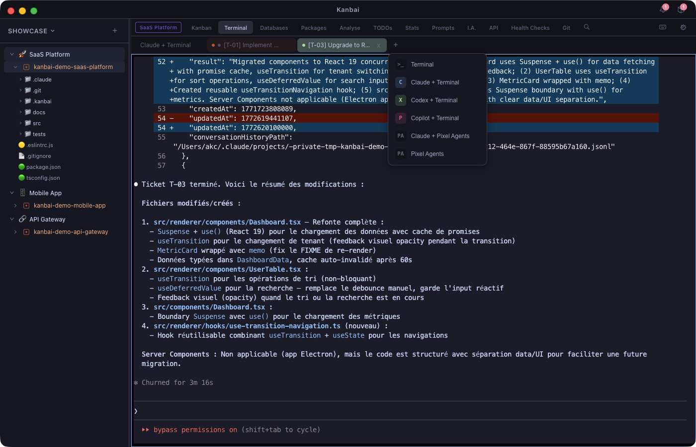
Terminal — Menu de création d'onglets avec les 6 types disponibles Terminal — Tab creation menu with all 6 available types
Guide : configurér un terminal de travail efficace Guide: setting up an efficient working terminal
Voici une configuration de terminal recommandee pour un workflow de développement productif : Here is a recommended terminal configuration for a productive development workflow:
- Ouvrez un premier onglet (Cmd+T) pour votre shell de travail principal Open a first tab (Cmd+T) for your main working shell
- Divisez-le horizontalement (Cmd+D) pour avoir un pane de commandes et un pane de logs Split it horizontally (Cmd+D) to have a command pane and a logs pane
- Ouvrez un deuxieme onglet pour Claude Code (ou utiliséz le bouton Claude dans la barre d'outils) Open a second tab for Claude Code (or use the Claude button in the toolbar)
- Utilisez un troisième onglet pour les operations Git si vous preferez la ligne de commande Use a third tab for Git operations if you prefer the command line
- Naviguez entre les onglets avec Cmd+1, Cmd+2, Cmd+3 Navigate between tabs with Cmd+1, Cmd+2, Cmd+3
Le terminal de Kanbai supporte complètement votre shell habituel (zsh, bash, fish). Toutes vos aliases, fonctions et configurations sont disponibles. Le terminal herite de votre profil shell comme tout emulateur natif.Kanbai's terminal fully supports your usual shell (zsh, bash, fish). All your aliases, functions and configurations are available. The terminal inherits from your shell profile like any native emulator.
Scripts NPM dans la barre d'outils NPM scripts in the toolbar
Quand un projet contient un package.json, Kanbai détecté automatiquement les scripts NPM et les affiche dans la barre d'outils du terminal. Cliquez sur un script pour l'executer dans le pane actif. Les scripts les plus courants comme dev, build, test et start sont accèssibles en un clic.
When a project contains a package.json, Kanbai automatically detects NPM scripts and displays them in the terminal toolbar. Click a script to execute it in the active pane. Common scripts like dev, build, test and start are accessible in one click.
Lancer Claude Code Launching Claude Code
Le bouton Claude dans la barre d'outils du terminal lance une session Claude Code dans un pane dédié. Claude Code s'ouvre dans le contexte du workspace actif, avec accès à tous les projets du workspace. Vous pouvez aussi lancer Claude manuellement en tapant claude dans n'importe quel pane.
The Claude button in the terminal toolbar launches a Claude Code session in a dedicated pane. Claude Code opens in the context of the active workspace, with access to all workspace projects. You can also launch Claude manually by typing claude in any pane.
Chaque onglet et chaque pane sont des processus shell independants. Fermer un pane avec Cmd+W terminé le processus en cours. Assurez-vous de sauvegarder votre travail avant de fermer un pane avec un processus actif.Each tab and pane are independent shell processes. Closing a pane with Cmd+W terminates the running process. Make sure to save your work before closing a pane with an active process.
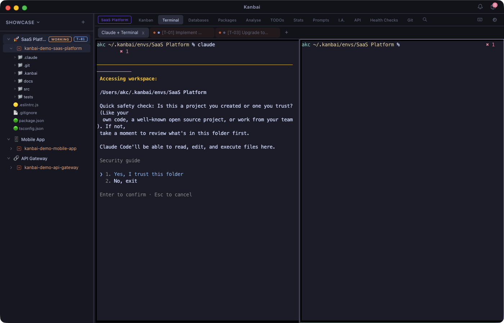
Terminal split : Claude Code a gauche, shell classique a droite. La barre d'outils affiche la branche Git active et tous les scripts NPM du projet. Split terminal: Claude Code on the left, regular shell on the right. The toolbar shows the active Git branch and all project NPM scripts.

Session Claude Code active dans un pane terminal dédié, avec contrôle complet des permissions et du comportement de l'agent. Active Claude Code session in a dedicated terminal pane, with full control over agent permissions and behavior.
Visualiseur de fichiers File Viewer
Le visualiseur de fichiers intégré est base sur Monaco Editor (le moteur de VS Code) avec le thème Catppuccin Mocha. Il offre la coloration syntaxique, la navigation, l'édition et la sauvegarde de fichiers directement dans Kanbai. The built-in file viewer is based on Monaco Editor (the VS Code engine) with the Catppuccin Mocha theme. It offers syntax highlighting, navigation, editing and file saving directly within Kanbai.
Langages supportes Supported languages
Plus de 20 langages avec coloration syntaxique complète : TypeScript, JavaScript, Python, Rust, Go, Java, C, C++, PHP, Ruby, Swift, Kotlin, HTML, CSS, SCSS, SQL, YAML, TOML, Markdown, JSON, et bien d'autres. Over 20 languages with full syntax highlighting: TypeScript, JavaScript, Python, Rust, Go, Java, C, C++, PHP, Ruby, Swift, Kotlin, HTML, CSS, SCSS, SQL, YAML, TOML, Markdown, JSON, and many more.
Fonctionnalités Features
L'editeur offre egalement la colorisation des paires de brackets, le redimensionnement automatique et la navigation par numero de ligne. Pour comparer deux fichiers, utiliséz Cmd+clic sur deux fichiers dans l'arborescence pour lancer la vue diff.The editor also offers bracket pair colorization, auto-resize and line number navigation. To compare two files, use Cmd+click on two files in the file tree to launch the diff view.
Claude AI
Kanbai offre une integration complète avec Claude Code, le copilote IA le plus puissant du marché. Au-dela du terminal, un tableau de bord dédié avec cinq onglets permet de contrôler finement le comportement de l'agent : Général, Sécurité & Sandbox, Agents & Skills, Intégrations et Mémoire. Kanbai offers complete integration with Claude Code, the most powerful AI copilot on the market. Beyond the terminal, a dedicated dashboard with five tabs lets you finely control the agent's behavior: General, Security & Sandbox, Agents & Skills, Integrations and Memory.
Claude Code doit être installé sur votre système pour utilisér les fonctionnalités IA. Kanbai détecté automatiquement sa presence et active les onglets correspondants.Claude Code must be installed on your system to use AI features. Kanbai automatically detects its presence and activates the corresponding tabs.
Onglet Général General tab
L'onglet Général est le centre de contrôle principal de Claude. Configurez le mode de permission, choisissez le modèle d'IA, ajustez les performances et activez les fonctionnalités avancées comme les équipes d'agents. The General tab is Claude's main control center. Configure the permission mode, choose the AI model, adjust performance and enable advanced features like agent teams.
Hooks d'activite Activity hooks
Installéz, mettez a jour ou supprimez les hooks d'activite qui s'executent automatiquement à des moments cles de l'activite de Claude (avant/apres une action, à la fin d'une session, etc.). Un badge indique l'etat actuel des hooks (installé, a jour, a mettre à jour). Install, update or remove activity hooks that run automatically at key moments during Claude's activity (before/after an action, at the end of a session, etc.). A badge indicates the current hook status (installed, up to date, needs update).
Mode de permission Permission mode
Cinq modes disponibles pour contrôler le niveau d'autonomie de Claude : Five modes available to control Claude's autonomy level:
- Bypass — Claude agit sans demander d'approbation. Mode le plus rapide, ideal pour les tâches de confiance Bypass — Claude acts without asking for approval. Fastest mode, ideal for trusted tasks
- Accept Edits — Claude demande une approbation uniquement pour les modifications de fichiers Accept Edits — Claude asks for approval only for file modifications
- Don't Ask — Claude ne pose pas de questions et agit directement Don't Ask — Claude doesn't ask questions and acts directly
- Plan — Claude propose un plan d'action avant d'executer quoi que ce soit Plan — Claude proposes an action plan before executing anything
- Default — Comportement par défaut de Claude Code Default — Default Claude Code behavior
Modèle & Performance Model & Performance
Choisissez le modèle d'IA parmi Default, Sonnet, Opus, Haiku ou Sonnet 1M. Ajustez le niveau d'effort (Low, Medium, High) et activez les fonctionnalités avancées : Choose the AI model from Default, Sonnet, Opus, Haiku or Sonnet 1M. Adjust the effort level (Low, Medium, High) and enable advanced features:
- Auto Approve — Approbation automatique des actions Auto Approve — Automatic action approval
- Extended Thinking — Réflexion approfondie pour les problemes complexes Extended Thinking — Deep reasoning for complex problems
- Fast Mode — Mode accelere pour les tâches simples Fast Mode — Faster mode for simple tasks
- Prompt Caching — Mise en cache pour reduire les couts Prompt Caching — Caching to reduce costs
- Extended Context (1M) — Contexte étendu a 1 million de tokens Extended Context (1M) — Extended context up to 1 million tokens
- Auto Memory — Memorisation automatique entre les sessions Auto Memory — Automatic memory between sessions
Des curseurs permettent d'ajuster le budget de réflexion (Thinking Budget, 0 a 128 000 tokens) et la limite de sortie (Output Limit, 1 000 a 64 000 tokens). Sliders let you adjust the Thinking Budget (0 to 128,000 tokens) and Output Limit (1,000 to 64,000 tokens).
Équipes d'agents Agent Teams
Activez les équipes d'agents (experimental) pour orchestrer plusieurs agents specialises. Configurez la liste de tâches, les tâches en arrière-plan, le mode d'affichage des coéquipiers (Default, Compact, Hidden) et le modèle par défaut des sous-agents (Inherit, Sonnet, Opus, Haiku). Enable agent teams (experimental) to orchestrate multiple specialized agents. Configure the task list, background tasks, teammate display mode (Default, Compact, Hidden) and subagent default model (Inherit, Sonnet, Opus, Haiku).
Importez et exportez votre configuration complète pour la partager entre machines ou avec votre equipe. Le bouton d'import/export se trouve en haut de l'onglet Général.Import and export your complete configuration to share between machines or with your team. The import/export button is at the top of the General tab.
Onglet Général : hooks d'activite, mode de permission, selection du modèle d'IA (Sonnet, Opus, Haiku, Sonnet 1M), fonctionnalités avancées (Extended Thinking, Fast Mode, Prompt Caching, Extended Context 1M, Auto Memory), curseurs de tokens et configuration des équipes d'agents. General tab: activity hooks, permission mode, AI model selection (Sonnet, Opus, Haiku, Sonnet 1M), advanced features (Extended Thinking, Fast Mode, Prompt Caching, Extended Context 1M, Auto Memory), token sliders and agent teams configuration.
Onglet Sécurité & Sandbox Security & Sandbox tab
L'onglet Sécurité & Sandbox vous donne un contrôle granulaire sur les outils et l'accès de Claude. Configurez individuellement chaque outil, activez le sandboxing et définissez les domaines et repertoires autorisés. The Security & Sandbox tab gives you granular control over Claude's tools and access. Configure each tool individually, enable sandboxing and define allowed domains and directories.
Outils autorisés et bloqués Allowed and blocked tools
Chaque outil dispose d'un selecteur a trois etats (défaut, autoriser, bloquer) : Bash, Read, Write, Edit, Glob, Grep, WebFetch, WebSearch, Task, NotebookEdit. Si des serveurs MCP sont configurés, leurs outils apparaissent également dans cette liste. Each tool has a three-state toggle (default, allow, deny): Bash, Read, Write, Edit, Glob, Grep, WebFetch, WebSearch, Task, NotebookEdit. If MCP servers are configured, their tools also appear in this list.
Configuration du sandbox Sandbox configuration
Activez ou désactivéz le sandbox pour isoler l'environnement d'exécution de Claude. Options disponibles : Enable or disable the sandbox to isolate Claude's execution environment. Available options:
- Sandbox — Active/désactivé l'isolation de l'environnement d'exécution Sandbox — Enable/disable execution environment isolation
- Auto Allow Bash If Sandboxed — Autorise automatiquement le Bash quand le sandbox est actif Auto Allow Bash If Sandboxed — Automatically allow Bash when sandbox is active
- Commandes exclues — Liste des commandes exclues du sandbox Excluded commands — List of commands excluded from the sandbox
- Domaines autorisés — Liste des domaines réseau accèssibles par Claude Allowed domains — List of network domains accessible by Claude
Répertoires supplementaires Additional directories
Ajoutez des repertoires supplementaires auxquels Claude peut acceder en dehors du projet courant. Utile pour partager des fichiers de configuration ou des bibliothèques internes entre projets. Add additional directories that Claude can access outside the current project. Useful for sharing configuration files or internal libraries across projects.
Le sandbox est recommande pour limiter l'accès de Claude au système de fichiers et au réseau. En mode sandbox, seuls les domaines et repertoires explicitement autorisés sont accèssibles.The sandbox is recommended to limit Claude's access to the file system and network. In sandbox mode, only explicitly allowed domains and directories are accessible.
Onglet Agents & Skills Agents & Skills tab
Gérez vos agents specialises et vos skills (slash commands) depuis une interface unifiée. Créez, editez, dupliquez et activez/désactivéz des agents et skills adaptes à vos besoins. Manage your specialized agents and skills (slash commands) from a unified interface. Create, edit, duplicate and enable/disable agents and skills tailored to your needs.
Agents par défaut Default agents
Kanbai fournit des agents pre-configurés (Architecte, Testeur, Designer Frontend, etc.) que vous pouvez personnalisér ou restaurer a leur configuration d'origine. Chaque agent est défini par un fichier Markdown avec un frontmatter YAML decrivant son role, ses responsabilites et sa methodologie. Kanbai provides pre-configured agents (Architect, Tester, Frontend Designer, etc.) that you can customize or restore to their default configuration. Each agent is defined by a Markdown file with a YAML frontmatter describing its role, responsibilities and methodology.
Agents personnalisés Custom agents
Créez vos propres agents a partir d'un modèle vierge ou d'un template existant. Chaque agent dispose d'une fiche affichant son nom et son etat (actif/désactivé). Actions disponibles : editer, dupliquer, supprimer, activer/désactivér. Create your own agents from a blank template or an existing one. Each agent has a card showing its name and status (enabled/disabled). Available actions: edit, duplicate, delete, enable/disable.
Skills
Les skills sont des slash commands réutilisables que Claude peut executer dans vos sessions. Gérez-les avec la même interface que les agents : creation, édition, duplication et suppression. Exemples de skills : Skills are reusable slash commands that Claude can execute in your sessions. Manage them with the same interface as agents: creation, editing, duplication and deletion. Skill examples:
/commit— Générer un commit structure avec message conventionnelGenerate a structured commit with conventional message/fix-issue— Corriger un bug a partir d'une issue GitHubFix a bug from a GitHub issue/pr-review— Revue complète de pull requestComplete pull request review/refactor— Guide de refactoring structureStructured refactoring guide/test— Générer des tests unitaires et d'integrationGenerate unit and integration tests/security-scan— Scanner le code pour les vulnerabilitesScan code for vulnerabilities
Guide : créer un agent personnalisé Guide: creating a custom agent
- Ouvrez l'onglet Agents & Skills dans le tableau de bord Claude AI Open the Agents & Skills tab in the Claude AI dashboard
- Cliquez sur "Add Agent" et choisissez de créer a partir d'un modèle vierge ou d'un template existant Click "Add Agent" and choose to create from a blank template or an existing one
- Renseignez le frontmatter YAML : nom, role, description et metadata Fill in the YAML frontmatter: name, role, description and metadata
- Redigez les instructions de l'agent en Markdown : responsabilites, methodologie, contraintes Write the agent's instructions in Markdown: responsibilities, methodology, constraints
- Sauvegardez. L'agent apparait dans la grille et peut être active/désactivé, duplique ou supprime Save. The agent appears in the grid and can be enabled/disabled, duplicated or deleted
Utilisez l'editeur intégré pour modifiér le frontmatter YAML et le contenu Markdown de chaque agent ou skill. Les agents désactivés ont l'extension .md.disabled et ne seront pas charges par Claude.Use the built-in editor to modify the YAML frontmatter and Markdown content of each agent or skill. Disabled agents have the .md.disabled extension and will not be loaded by Claude.
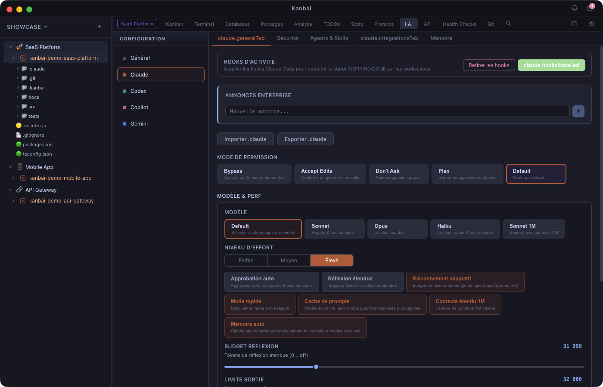
Onglet Agents & Skills : agents par défaut et personnalisés, skills (slash commands) deployables en un clic. Creation, édition, duplication et activation/desactivation depuis une interface unifiée. Agents & Skills tab: default and custom agents, skills (slash commands) deployable in one click. Creation, editing, duplication and enable/disable from a unified interface.
Onglet Intégrations Integrations tab
L'onglet Intégrations centralise la connexion avec les services externes : serveurs MCP, workflows d'orchestration et variables d'environnement. Trois sections depliables organisent les differentes configurations. The Integrations tab centralizes connections with external services: MCP servers, orchestration workflows and environment variables. Three collapsible sections organize the different configurations.
Serveurs MCP MCP Servers
Le panneau MCP (Model Context Protocol) permet de donner a Claude des super-pouvoirs en connectant des serveurs d'outils externes. Parcourez un catalogue de serveurs pre-configurés classes par catégorie ou ajoutez un serveur manuellement. Deux types de serveurs sont supportes : The MCP (Model Context Protocol) panel lets you give Claude superpowers by connecting external tool servers. Browse a pre-configured server catalog organized by category or add a server manually. Two server types are supported:
- Local/Commande — Serveur lance par une commande locale avec arguments et variables d'environnement Local/Command — Server launched by a local command with arguments and environment variables
- HTTP — Serveur distant accèssible via URL, avec en-têtes optionnels HTTP — Remote server accessible via URL, with optional headers
Catégories du catalogue : Database, File System, Web, AI, Dev Tools, Cloud, Communication, Utilities. Chaque serveur affiche son nom, sa description, un badge "officiel" le cas echeant, et la liste de ses fonctionnalités. Installation en un clic. Catalog categorys: Database, File System, Web, AI, Dev Tools, Cloud, Communication, Utilities. Each server shows its name, description, an "official" badge where applicable, and its feature list. One-click install.
Workflow
Configurez un workflow d'orchestration complet pour Claude. Cinq axes configurables définissent comment Claude travaille sur vos projets : Configure a comprehensive orchestration workflow for Claude. Five configurable axes define how Claude works on your projects:
- Mode Plan — Entrer en mode plan pour toute tâche non triviale (3+ étapes ou décisions architecturales) Plan Mode — Enter plan mode for any non-trivial task (3+ steps or architectural decisions)
- Strategie sous-agents — Déléguer recherche et analyse en parallele via des sous-agents dédiés Subagent strategy — Delegate research and analysis in parallel via dedicated subagents
- Boucle d'amélioration — Mettre à jour les lecons apprises apres toute correction Improvement loop — Update lessons learned after any correction
- Vérification avant completion — Prouver le fonctionnement avant de terminér une tâche Pre-completion verification — Prove it works before marking a task as done
- Correction autonome — Corriger directement bugs et tests CI en echec sans intervention Autonomous fixing — Fix bugs and failing CI tests directly without intervention
Déployéz le workflow sur un projet spécifique ou sur tous vos projets en un clic. Le workflow est injecte dans votre fichier CLAUDE.md via un marqueur dédié. Deploy the workflow to a specific project or to all your projects in one click. The workflow is injected into your CLAUDE.md file via a dedicated marker.
Variables d'environnement Environment variables
Definissez des variables d'environnement personnalisées (cles API, tokens, configuration) qui seront disponibles pour Claude et les serveurs MCP pendant les sessions. Interface d'ajout/suppression avec paires cle-valeur. Define custom environment variables (API keys, tokens, configuration) that will be available to Claude and MCP servers during sessions. Add/remove interface with key-value pairs.
Guide : installér un serveur MCP Guide: installing an MCP server
- Naviguez vers l'onglet Intégrations dans le tableau de bord Claude AI Navigate to the Integrations tab in the Claude AI dashboard
- Ouvrez la section MCP et parcourez le catalogue ou filtrez par catégorie Open the MCP section and browse the catalog or filter by category
- Cliquez sur "Installér". Kanbai configuré automatiquement la commande et les arguments Click "Install". Kanbai automatically configureds the command and arguments
- Si des variables d'environnement sont requises (cles API, tokens), remplissez les champs demandes If environment variables are required (API keys, tokens), fill in the requested fields
- Le serveur est pret a utilisér dans vos sessions Claude The server is ready to use in your Claude sessions
Les serveurs MCP etendent les capacites de Claude au-dela de la lecture et l'ecriture de fichiers. Avec les bons serveurs, Claude peut interroger des bases de données, naviguer sur le web, interagir avec des services cloud, et bien plus encore.MCP servers extend Claude's capabilities beyond reading and writing files. With the right servers, Claude can query databases, browse the web, interact with cloud services, and much more.
Onglet Mémoire Memory tab
L'onglet Mémoire centralise toutes les instructions et règles qui définissent le comportement de Claude. Cinq sous-onglets organisent les differentes sources de configuration : The Memory tab centralizes all instructions and rules that define Claude's behavior. Five sub-tabs organize the different configuration sources:
Rules
Le gestionnaire de règles offre une interface hierarchique pour organiser vos fichiers de règles. Naviguez dans l'arborescence, faites du glisser-deposer pour reorganiser, recherchez et filtrez les règles disponibles. Liez des règles partagees depuis .claude/ai-rules/, importez/exportez et synchronisez avec des templates upstream. Un editeur intégré permet de modifiér chaque règle directement avec affichage du badge auteur.
The rules manager provides a hierarchical interface to organize your rule files. Browse the tree, drag and drop to reorganize, search and filter available rules. Link shared rules from .claude/ai-rules/, import/export and sync with upstream templates. A built-in editor lets you modify each rule directly with author badge display.
Mémoire Projet (CLAUDE.md) Project Memory (CLAUDE.md)
Editez le fichier CLAUDE.md de votre projet directement dans l'application. Ce fichier définit les instructions spécifiques au projet : conventions de code, architecture, règles de commit, configuration d'equipe d'agents. Les modifications sont sauvegardees immediatement.
Edit your project's CLAUDE.md file directly in the application. This file defines project-specific instructions: code conventions, architecture, commit rules, agent team configuration. Changes are saved immediately.
Mémoire Utilisateur (~/.claude/CLAUDE.md) User Memory (~/.claude/CLAUDE.md)
Vos instructions personnelles qui s'appliquent à tous vos projets. Definissez vos préférences globales, votre style de code et vos outils preferes dans ~/.claude/CLAUDE.md.
Your personal instructions that apply to all your projects. Define your global preferences, coding style and favorite tools in ~/.claude/CLAUDE.md.
Mémoire Locale (CLAUDE.local.md) Local Memory (CLAUDE.local.md)
Surcharges locales non versionnees (non commitees dans Git). Ideal pour les configurations spécifiques à votre machine ou vos cles API locales. Local overrides not tracked by version control (not committed to Git). Ideal for machine-specific configurations or local API keys.
Mémoire Geree Managed Memory
Vue en lecture seule des instructions gérées par le système. Ces instructions sont générées automatiquement et ne peuvent pas être modifiées manuellement. Read-only view of system-managed instructions. These instructions are automatically generated and cannot be manually edited.
Le fichier CLAUDE.md est lu par Claude à chaque session. Des instructions claires et bien structurees ameliorent significativement la qualité des réponses. Utilisez le gestionnaire de règles pour organiser vos instructions par domaine et technologie.The CLAUDE.md file is read by Claude at each session. Keyar and well-structured instructions significantly improve response quality. Use the rules manager to organize your instructions by domain and technology.
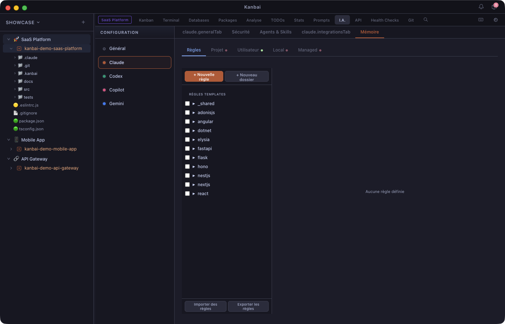
Onglet Mémoire : gestionnaire de règles hierarchique, editeur CLAUDE.md intégré (projet, utilisateur, local), mémoire geree en lecture seule. Toutes les instructions de Claude centralisees en un seul endroit. Memory tab: hierarchical rules manager, built-in CLAUDE.md editor (project, user, local), read-only managed memory. All Claude instructions centralized in one place.
AutoClaude
AutoClaude généré automatiquement un fichier .claude/CLAUDE.md pour les projets qui n'en ont pas. Si vous venez d'ajouter un projet à votre workspace et qu'il n'a pas de configuration Claude, AutoClaude vous propose de créer un fichier d'instructions adapte à votre stack technique.
AutoClaude automatically generates a .claude/CLAUDE.md file for projects that don't have one. If you just added a project to your workspace and it has no Claude configuration, AutoClaude offers to create an instruction file adapted to your tech stack.
Fonctionnalités Features
Utilisation Usage
- Ouvrez l'onglet AutoClaude dans le tableau de bord Claude AI Open the AutoClaude tab in the Claude AI dashboard
- Sélectionnez le template adapte à votre projet (Standard, Fullstack ou Frontend) Select the template suited to your project (Standard, Fullstack or Frontend)
- Previsualisez le contenu généré dans l'aperçu en direct Preview the generated content in the live preview
-
Cliquez sur "Appliquer" pour créer le fichier
.claude/CLAUDE.mddans votre projet Click "Apply" to create the.claude/CLAUDE.mdfile in your project
AutoClaude est un point de depart. Apres avoir généré le fichier, personnaliséz-le dans l'onglet Mémoire pour l'adapter aux spécificités de votre projet.AutoClaude is a starting point. After generating the file, customize it in the Memory tab to adapt it to your project's specifics.
Codex
Kanbai intégré OpenAI Codex en tant qu'agent IA complémentaire a Claude Code. Un tableau de bord dédié avec quatre onglets permet de configurér Codex : Général, Règles, Mémoire et Skills. Codex fonctionne avec le même Kanban que Claude — envoyéz un ticket a Codex, il le résout automatiquement. Kanbai integrates OpenAI Codex as a complementary AI agent to Claude Code. A dedicated dashboard with four tabs lets you configured Codex: General, Rules, Memory and Skills. Codex works with the same Kanban as Claude — send a ticket to Codex, it resolves it automatically.
Codex CLI doit être installé sur votre système. Kanbai détecté automatiquement sa presence et active l'onglet Codex dans le tableau de bord AI.Codex CLI must be installed on your system. Kanbai automatically detects its presence and activates the Codex tab in the AI dashboard.
Onglet Général General tab
L'onglet Général de Codex contrôle les paramêtres fondamentaux de l'agent : politique d'approbation, mode sandbox, et fonctionnalités avancées. The Codex General tab controls the agent's core settings: approval policy, sandbox mode, and advanced features.
Politique d'approbation Approval policy
Trois modes disponibles pour contrôler le niveau d'autonomie de Codex : Three modes available to control Codex's autonomy level:
- Suggest — Codex propose des modifications, vous les validez avant application Suggest — Codex proposes changes, you validate them before applying
- Auto-edit — Codex applique automatiquement les modifications aux fichiers mais demande approbation pour les commandes système Auto-edit — Codex automatically applies file changes but asks approval for system commands
- Full auto — Codex agit sans approbation. Mode le plus rapide, ideal pour les tâches de confiance Full auto — Codex acts without approval. Fastest mode, ideal for trusted tasks
Mode Sandbox Sandbox mode
Le sandbox contrôle les accès fichiers de Codex : The sandbox controls Codex's file access:
- Lecture seule — Codex peut lire les fichiers mais pas les modifiér Read-only — Codex can read files but not modify them
- Ecriture workspace — Codex peut modifiér les fichiers dans le workspace uniquement Workspace write — Codex can modify files within the workspace only
Fonctionnalités avancées Advanced features
- Multi-agent — Activez les equipes d'agents Codex pour des tâches complexes Multi-agent — Enable Codex agent teams for complex tasks
- Recherche web — Autorisez Codex a effectuer des recherches web pour enrichir ses réponses Web search — Allow Codex to perform web searches to enrich its responses
- Persistence d'historique — Configurez la sauvegarde des sessions Codex (tout sauvegarder, rien sauvegarder, ou sauvegarder par défaut) History persistence — Configure Codex session saving (save all, save nothing, or save by default)
Onglet Règles Rules tab
L'onglet Règles permet de définir les instructions que Codex doit suivre pendant ses sessions. Ces règles sont ecrites dans le fichier .codex/AGENTS.md et sont injectees automatiquement dans chaque session Codex.
The Rules tab lets you define instructions that Codex must follow during its sessions. These rules are written in the .codex/AGENTS.md file and are automatically injected into every Codex session.
Editez les règles directement dans l'interface avec aperçu en temps reel, ou ajoutez des règles partagees via le système de fichiers de règles. Les modifications sont sauvegardees automatiquement. Edit rules directly in the interface with real-time preview, or add shared rules via the rules file system. Changes are saved automatically.
Onglet Mémoire Memory tab
L'onglet Mémoire de Codex centralise la configuration persistante : le fichier .codex/config.toml. Visualisez et editez la configuration directement dans Kanbai — politique d'approbation, mode sandbox, fonctionnalités et historique.
The Codex Memory tab centralizes persistent configuration: the .codex/config.toml file. View and edit the configuration directly in Kanbai — approval policy, sandbox mode, features and history.
Skills
L'onglet Skills de Codex permet d'etendre les capacites de l'agent avec des competences personnalisées. Ajoutez des skills spécifiques à votre projet qui seront automatiquement disponibles dans les sessions Codex. The Codex Skills tab lets you extend the agent's capabilities with custom skills. Add project-specific skills that will be automatically available in Codex sessions.
Integration Kanban Kanban integration
Codex s'intégré au Kanban de la même maniere que Claude. Chaque ticket peut être envoyé a Codex via le bouton dédié. Kanbai ouvre un onglet terminal avec Codex CLI et lui transmet le fichier prompt du ticket. Le workflow est identique : TODO → WORKING → DONE/PENDING/FAILED. Codex integrates with the Kanban the same way as Claude. Every ticket can be sent to Codex via the dedicated button. Kanbai opens a terminal tab with Codex CLI and passes it the ticket's prompt file. The workflow is identical: TODO → WORKING → DONE/PENDING/FAILED.
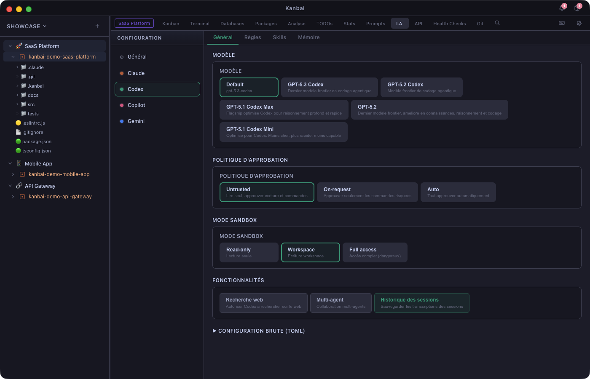
Codex — Tableau de bord de configuration avec modèles GPT-5.3/5.2/5.1, politique d'approbation et paramètres sandbox Codex — Configuration dashboard with GPT-5.3/5.2/5.1 models, approval policy and sandbox settings
Utilisez Claude, Codex, Copilot et Gemini de maniere complémentaire : Claude excelle en architecture et raisonnement complexe, Codex est rapide pour les modifications simples et le scaffolding de code, Copilot brille en autocompletion et suggestions contextuelles, Gemini apporte une compréhension multimodale et un raisonnement avancé. Envoyéz chaque ticket à l'agent le plus adapte.Use Claude, Codex, Copilot and Gemini in a complementary way: Claude excels at architecture and complex reasoning, Codex is fast for simple changes and code scaffolding, Copilot shines at autocompletion and contextual suggestions, Gemini brings multimodal understanding and advanced reasoning. Send each ticket to the most suitable agent.
Copilot
Kanbai intégré GitHub Copilot en tant que troisième agent IA, aux côtés de Claude et Codex. Un tableau de bord dédié avec quatre onglets permet de configurér Copilot : Général, Règles, Mémoire et Skills. Copilot fonctionne avec le même Kanban que Claude et Codex — envoyéz un ticket a Copilot, il le résout automatiquement. Kanbai integrates GitHub Copilot as a third AI agent, alongside Claude and Codex. A dedicated dashboard with four tabs lets you configured Copilot: General, Rules, Memory and Skills. Copilot works with the same Kanban as Claude and Codex — send a ticket to Copilot, it resolves it automatically.
Copilot CLI doit être installé sur votre système. Kanbai détecté automatiquement sa presence et active l'onglet Copilot dans le tableau de bord AI.Copilot CLI must be installed on your system. Kanbai automatically detects its presence and activates the Copilot tab in the AI dashboard.
Onglet Général General tab
L'onglet Général de Copilot contrôle les paramêtres fondamentaux de l'agent : selection du modèle, politique d'approbation et fonctionnalités avancées. The Copilot General tab controls the agent's core settings: model selection, approval policy and advanced features.
Politique d'approbation Approval policy
Trois modes disponibles pour contrôler le niveau d'autonomie de Copilot : Three modes available to control Copilot's autonomy level:
- Suggest — Copilot propose des modifications, vous les validez avant application Suggest — Copilot proposes changes, you validate them before applying
- Auto-edit — Copilot applique automatiquement les modifications aux fichiers mais demande approbation pour les commandes système Auto-edit — Copilot automatically applies file changes but asks approval for system commands
- Full auto — Copilot agit sans approbation. Mode le plus rapide, ideal pour les tâches de confiance Full auto — Copilot acts without approval. Fastest mode, ideal for trusted tasks
Fonctionnalités avancées Advanced features
- Recherche web — Autorisez Copilot a effectuer des recherches web pour enrichir ses réponses Web search — Allow Copilot to perform web searches to enrich its responses
- Mode plan — Activez le mode plan pour que Copilot propose un plan avant d'agir Plan mode — Enable plan mode so Copilot proposes a plan before acting
- Delegation — Autorisez Copilot a déléguer des sous-tâches a d'autres agents Delegation — Allow Copilot to delegate subtasks to other agents
Onglet Règles Rules tab
L'onglet Règles permet de définir les instructions que Copilot doit suivre pendant ses sessions. Gérez les règles partagees via le système de fichiers de règles. Les modifications sont sauvegardees automatiquement. The Rules tab lets you define instructions that Copilot must follow during its sessions. Manage shared rules via the rules file system. Changes are saved automatically.
Onglet Mémoire Memory tab
L'onglet Mémoire de Copilot centralise les instructions persistantes. Editez les instructions projet (.copilot/instructions.md) et les instructions globales (~/.copilot/instructions.md) directement dans Kanbai.
The Copilot Memory tab centralizes persistent instructions. Edit project instructions (.copilot/instructions.md) and global instructions (~/.copilot/instructions.md) directly in Kanbai.
Skills
L'onglet Skills de Copilot permet d'etendre les capacites de l'agent avec des competences personnalisées. Ajoutez des skills spécifiques à votre projet qui seront automatiquement disponibles dans les sessions Copilot. The Copilot Skills tab lets you extend the agent's capabilities with custom skills. Add project-specific skills that will be automatically available in Copilot sessions.
Integration Kanban Kanban integration
Copilot s'intégré au Kanban de la même maniere que Claude et Codex. Chaque ticket peut être envoyé a Copilot via le bouton dédié. Kanbai ouvre un onglet terminal avec Copilot CLI et lui transmet le fichier prompt du ticket. Le workflow est identique : TODO → WORKING → DONE/PENDING/FAILED. Copilot integrates with the Kanban the same way as Claude and Codex. Every ticket can be sent to Copilot via the dedicated button. Kanbai opens a terminal tab with Copilot CLI and passes it the ticket's prompt file. The workflow is identical: TODO → WORKING → DONE/PENDING/FAILED.
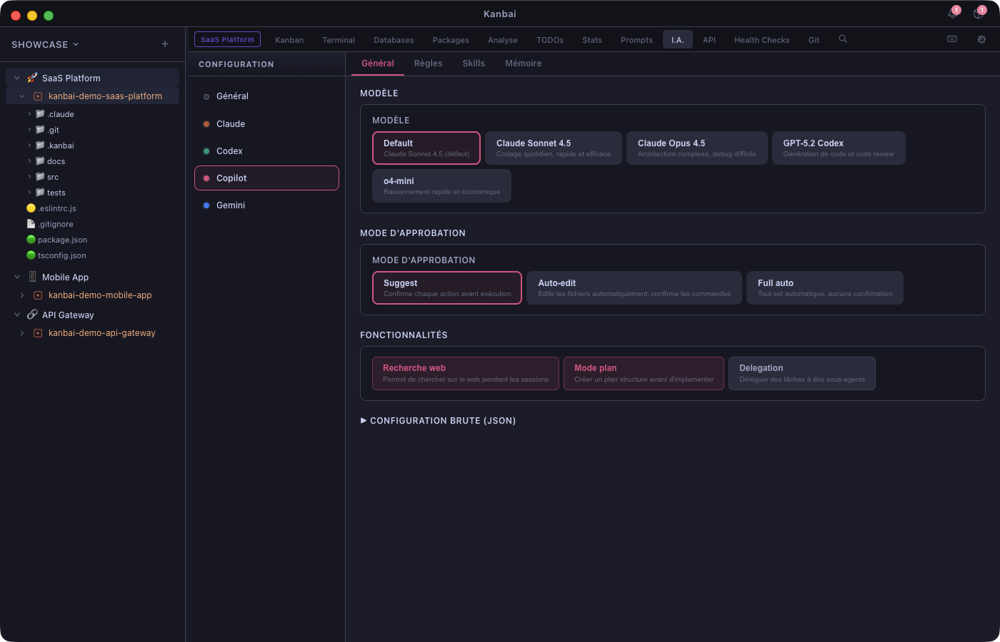
Copilot — Tableau de bord avec sélection de modèles (Claude Sonnet 4.5, Opus 4.5, GPT-5.2, o4-mini) et modes d'approbation Copilot — Dashboard with model selection (Claude Sonnet 4.5, Opus 4.5, GPT-5.2, o4-mini) and approval modes
Gemini
Kanbai intègre Google Gemini en tant que quatrième agent IA, aux côtés de Claude, Codex et Copilot. Un tableau de bord dédié avec sept onglets permet de configurer Gemini : Général, Interface, Outils, Sécurité, Agents, Mémoire et Skills. Gemini fonctionne avec le même Kanban que les autres agents — envoyez un ticket à Gemini, il le résout automatiquement. Kanbai integrates Google Gemini as a fourth AI agent, alongside Claude, Codex and Copilot. A dedicated dashboard with seven tabs lets you configure Gemini: General, Interface, Tools, Security, Agents, Memory and Skills. Gemini works with the same Kanban as the other agents — send a ticket to Gemini, it resolves it automatically.
Gemini CLI doit être installé sur votre système (npm install -g @google/gemini-cli). Kanbai détecte automatiquement sa présence et active l'onglet Gemini dans le tableau de bord AI.Gemini CLI must be installed on your system (npm install -g @google/gemini-cli). Kanbai automatically detects its presence and activates the Gemini tab in the AI dashboard.
Onglet Général General tab
L'onglet Général de Gemini contrôle les paramètres fondamentaux de l'agent via le fichier .gemini/settings.json : sélection du modèle, mode d'approbation et fonctionnalités avancées.
The Gemini General tab controls the agent's core settings via the .gemini/settings.json file: model selection, approval mode and advanced features.
Sélection du modèle Model selection
Choisissez parmi les modèles Gemini disponibles : Choose from available Gemini models:
- gemini-2.5-pro — Modèle le plus performant, idéal pour les tâches complexesMost capable model, ideal for complex tasks
- gemini-2.5-flash — Rapide et efficace pour les tâches courantesFast and efficient for common tasks
- gemini-2.5-flash-lite — Le plus léger, parfait pour les opérations simplesLightest model, perfect for simple operations
- gemini-3-pro-preview — Aperçu de la prochaine génération ProPreview of next-gen Pro
- gemini-3-flash-preview — Aperçu de la prochaine génération FlashPreview of next-gen Flash
Mode d'approbation Approval mode
Trois modes disponibles pour contrôler le niveau d'autonomie de Gemini : Three modes available to control Gemini's autonomy level:
- Default — Gemini demande approbation pour chaque action Default — Gemini asks approval for every action
- Auto-edit — Gemini applique automatiquement les modifications aux fichiers Auto-edit — Gemini automatically applies file changes
- Plan — Gemini propose un plan avant d'agir Plan — Gemini proposes a plan before acting
Fonctionnalités avancées Advanced features
- Mode Vim — Activez les raccourcis Vim dans l'interface Vim mode — Enable Vim keybindings in the interface
- Arbre de répertoires — Incluez automatiquement la structure des fichiers dans le contexte Directory tree — Automatically include file structure in context
Onglet Interface Interface tab
L'onglet Interface contrôle l'apparence et le comportement visuel de Gemini CLI. The Interface tab controls the appearance and visual behavior of Gemini CLI.
Mode de réflexion Thinking mode
- Off — Désactivé, réponses directes Off — Disabled, direct responses
- Full — Raisonnement complet visible dans les réponses Full — Full reasoning visible in responses
Affichage Display
- Thème automatique — Suit le thème du système (clair/sombre) Auto theme — Follows system theme (light/dark)
- Masquer titre — Cache le titre de la fenêtre Hide title — Hides the window title
- Titre dynamique — Met à jour le titre selon le contexte Dynamic title — Updates the title based on context
- Buffer alternatif — Utilise le buffer alternatif du terminal Alternate buffer — Uses the terminal's alternate buffer
- Couleur de fond — Couleur personnalisée pour le fond du terminal Background color — Custom background color for the terminal
- Rendu incrémental — Affiche les réponses progressivement Incremental rendering — Displays responses progressively
Visibilité Visibility
- Masquer bannière / astuces — Cache les éléments d'aide au démarrage Hide banner / tips — Hides startup help elements
- Raccourcis — Affiche ou masque les raccourcis clavier Shortcuts — Show or hide keyboard shortcuts
- Résumé du contexte — Affiche un résumé du contexte actuel Context summary — Shows a summary of the current context
- Spinner — Affiche un indicateur de chargement Spinner — Shows a loading indicator
- Avertissement répertoire home — Alerte quand Gemini s'exécute dans le répertoire home Home directory warning — Warns when Gemini runs in the home directory
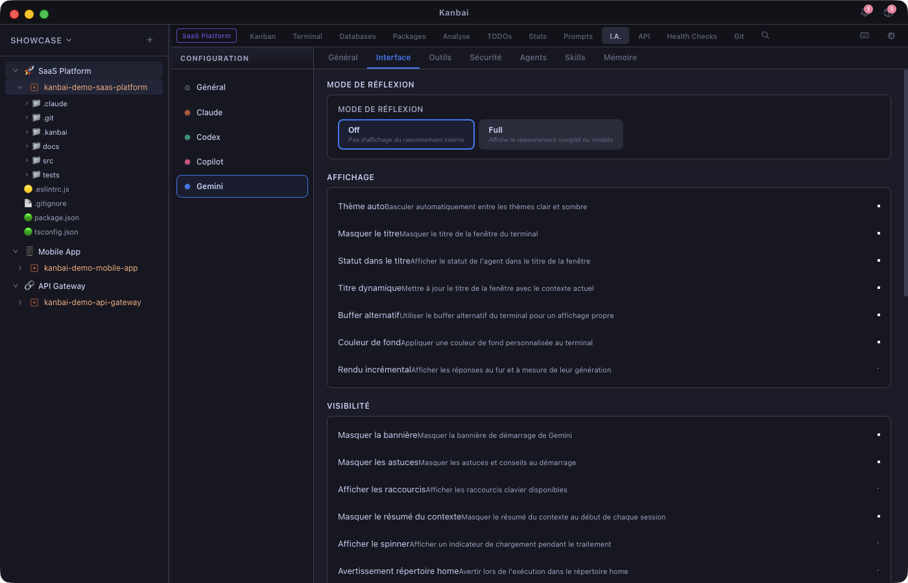
Gemini — Paramètres d'interface : mode de réflexion, affichage et visibilité Gemini — Interface settings: thinking mode, display and visibility
Onglet Outils Tools tab
L'onglet Outils configure l'environnement d'exécution de Gemini : sandbox, shell, outils disponibles et gestion du contexte fichier. The Tools tab configures Gemini's execution environment: sandbox, shell, available tools and file context management.
Sandbox
- Off — Pas d'isolation, exécution directeNo isolation, direct execution
- Auto — Isolation automatique selon le contexteAutomatic isolation based on context
- Seatbelt — Sandbox macOS natif (léger)Native macOS sandbox (lightweight)
- Docker — Isolation complète via DockerFull isolation via Docker
- Podman — Alternative rootless à DockerRootless alternative to Docker
Shell
- Shell interactif — Charge le profil shell complet (.bashrc, .zshrc) Interactive shell — Loads full shell profile (.bashrc, .zshrc)
- Couleurs — Active les couleurs ANSI dans les sorties Colors — Enables ANSI colors in output
Outils Tools
- ripgrep — Utilise ripgrep pour la recherche dans les fichiers ripgrep — Uses ripgrep for file search
- Correction LLM — Corrige automatiquement les erreurs via le modèle LLM correction — Automatically fixes errors via the model
- Seuil de troncature — Limite la taille des sorties longues Truncation threshold — Limits the size of long outputs
Contexte Context
- Max directories — Nombre maximum de répertoires à inclure dans le contexte Max directories — Maximum number of directories to include in context
- Mémoire include dirs — Répertoires supplémentaires inclus dans la mémoire Memory include dirs — Additional directories included in memory
Filtrage fichiers File filtering
- .gitignore / .geminiignore — Respect des fichiers d'exclusion .gitignore / .geminiignore — Respects exclusion files
- Recherche récursive / fuzzy — Options de recherche avancée dans les fichiers Recursive / fuzzy search — Advanced file search options
- Chemins ignorés — Liste de chemins exclus de l'analyse Ignored paths — List of paths excluded from analysis
Onglet Sécurité Security tab
L'onglet Sécurité contrôle les niveaux de confiance, les extensions autorisées et les options de confidentialité de Gemini. The Security tab controls trust levels, allowed extensions and Gemini's privacy options.
- Mode YOLO — Désactive toutes les confirmations (usage avancé uniquement) YOLO mode — Disables all confirmations (advanced use only)
- Approbation permanente — Mémorise les approbations pour les actions récurrentes Permanent approval — Remembers approvals for recurring actions
- Conseca — Mode de sécurité renforcée Conseca — Enhanced security mode
- Extensions Git — Contrôle les extensions Git autorisées Git extensions — Controls allowed Git extensions
- Extensions autorisées — Liste blanche des extensions tierces Allowed extensions — Whitelist of third-party extensions
- Confiance dossiers — Niveaux de confiance par répertoire de travail Folder trust — Trust levels per working directory
- Rédaction variables d'env — Masque les variables d'environnement sensibles dans les logs Env variable redaction — Hides sensitive environment variables in logs
Onglet Agents Agents tab
L'onglet Agents gère les fonctionnalités expérimentales liées aux sous-agents et au routage intelligent de Gemini. The Agents tab manages experimental features related to sub-agents and Gemini's intelligent routing.
Fonctionnalités expérimentales Experimental features
- Activer agents — Active le système d'agents multiples Enable agents — Activates the multi-agent system
- Mode plan — Les agents proposent un plan avant d'agir Plan mode — Agents propose a plan before acting
- Routage modèle — Sélection intelligente du modèle selon la tâche Model routing — Intelligent model selection based on task
- Récupération web directe — Permet aux agents d'accéder directement au web Direct web fetch — Allows agents to access the web directly
Sous-agents Sub-agents
- Routeur Gemma — Utilise Gemma pour le routage local des sous-agents Gemma router — Uses Gemma for local sub-agent routing
- Masquage sorties — Cache les sorties détaillées des sous-agents Output masking — Hides detailed sub-agent outputs
Presse-papiers Clipboard
- OSC52 — Support du protocole OSC52 pour le copier-coller via le terminal OSC52 — OSC52 protocol support for copy-paste via terminal
Skills, Hooks et agents personnalisés Skills, Hooks and custom agents
Configuration des skills spécifiques, des hooks d'événements et définition d'agents personnalisés pour des workflows sur mesure. Configuration of specific skills, event hooks and custom agent definitions for tailored workflows.
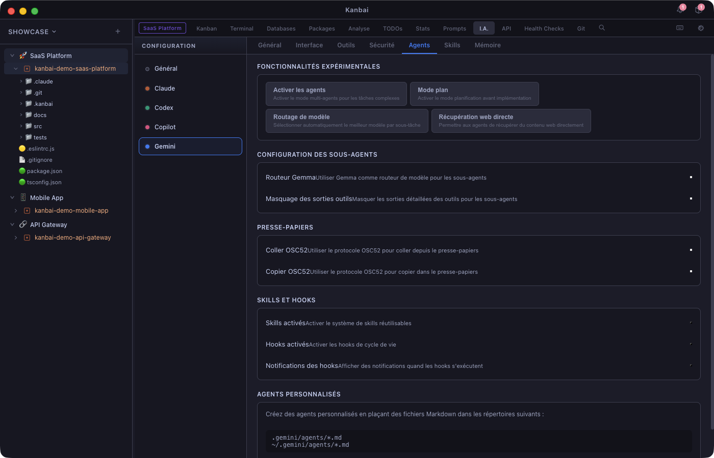
Gemini — Agents : fonctionnalités expérimentales, sous-agents, presse-papiers et agents personnalisés Gemini — Agents: experimental features, sub-agents, clipboard and custom agents
Onglet Mémoire Memory tab
L'onglet Mémoire de Gemini centralise les instructions persistantes. Éditez les instructions projet (GEMINI.md) et les instructions globales (~/.gemini/GEMINI.md) directement dans Kanbai.
The Gemini Memory tab centralizes persistent instructions. Edit project instructions (GEMINI.md) and global instructions (~/.gemini/GEMINI.md) directly in Kanbai.
Skills
L'onglet Skills de Gemini permet d'étendre les capacités de l'agent avec des compétences personnalisées. Ajoutez des skills spécifiques à votre projet qui seront automatiquement disponibles dans les sessions Gemini. The Gemini Skills tab lets you extend the agent's capabilities with custom skills. Add project-specific skills that will be automatically available in Gemini sessions.
Intégration Kanban Kanban integration
Gemini s'intègre au Kanban de la même manière que Claude, Codex et Copilot. Chaque ticket peut être envoyé à Gemini via le bouton dédié. Kanbai ouvre un onglet terminal avec Gemini CLI et lui transmet le fichier prompt du ticket. Le workflow est identique : TODO → WORKING → DONE/PENDING/FAILED. Gemini integrates with the Kanban the same way as Claude, Codex and Copilot. Every ticket can be sent to Gemini via the dedicated button. Kanbai opens a terminal tab with Gemini CLI and passes it the ticket's prompt file. The workflow is identical: TODO → WORKING → DONE/PENDING/FAILED.
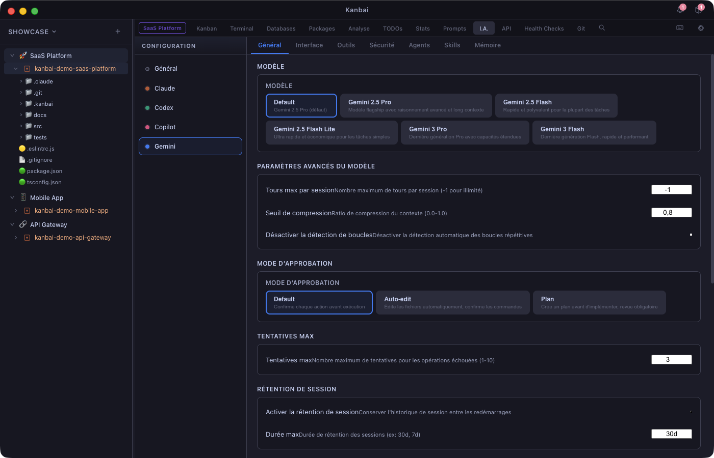
Gemini — Configuration générale avec modèles 2.5 Pro/Flash et 3 Pro/Flash, paramètres de session et mode d'approbation Gemini — General configuration with 2.5 Pro/Flash and 3 Pro/Flash models, session parameters and approval mode
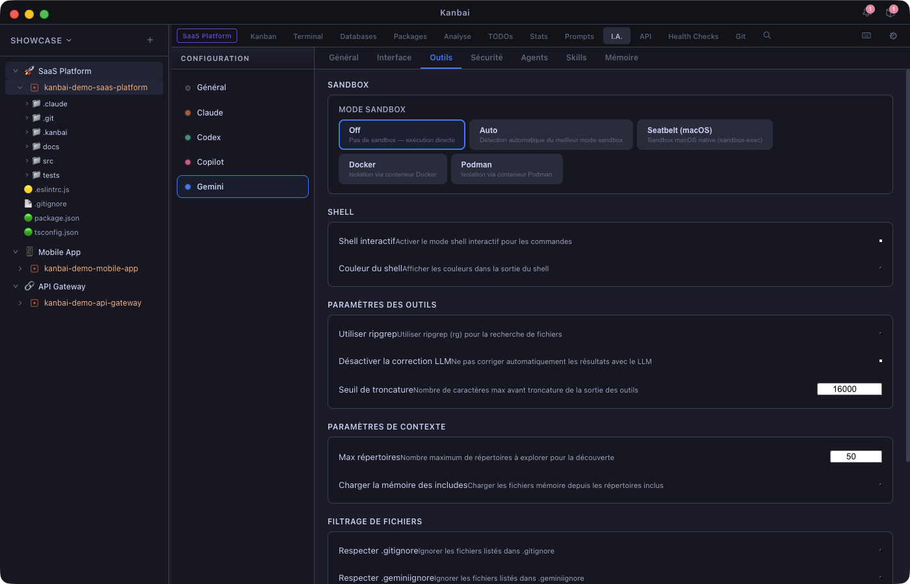
Gemini — Outils et sandbox (Off/Auto/Seatbelt/Docker/Podman), configuration shell et outils disponibles Gemini — Tools and sandbox (Off/Auto/Seatbelt/Docker/Podman), shell configuration and available tools
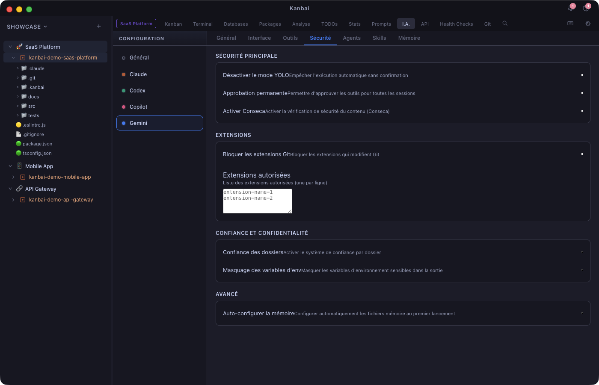
Gemini — Sécurité : mode YOLO, extensions, niveaux de confiance et vie privée Gemini — Security: YOLO mode, extensions, trust levels and privacy
Pixel Agents
Pixel Agents est une fonctionnalité ludique intégrée à Kanbai qui visualise vos agents IA sous forme de personnages pixel art dans un bureau virtuel. Chaque agent (Claude, Codex, Copilot, Gemini) est représenté par un avatar animé qui travaille dans un espace partagé. C'est un moyen fun et visuel de suivre l'activité de vos agents IA. Pixel Agents is a fun feature integrated into Kanbai that visualizes your AI agents as pixel art characters in a virtual office. Each agent (Claude, Codex, Copilot, Gemini) is represented by an animated avatar working in a shared space. It's a fun and visual way to track your AI agents' activity.
Accès Access
Pixel Agents est accessible depuis l'onglet Terminal via le bouton +. Deux modes sont disponibles : Pixel Agents is accessible from the Terminal tab via the + button. Two modes are available:
- Pixel Agents — Vue plein écran du bureau virtuel avec vos agentsPixel Agents — Full screen view of the virtual office with your agents
- Claude + Pixel Agents — Vue splitée avec un terminal Claude Code à gauche et le bureau virtuel à droiteClaude + Pixel Agents — Split view with a Claude Code terminal on the left and the virtual office on the right
Fonctionnalités Features
- + Agent — Ajoutez de nouveaux agents à votre bureau virtuel+ Agent — Add new agents to your virtual office
- Layout — Personnalisez la disposition du bureau (meubles, décorations)Layout — Customize the office layout (furniture, decorations)
- Settings — Configurez le comportement des agents et les animationsSettings — Configure agent behavior and animations
Installation Installation
Pixel Agents peut être installé et mis à jour depuis le centre de mises à jour de Kanbai (icône en haut à droite). Une fois installé, les options Pixel Agents apparaissent automatiquement dans le menu + du Terminal. Pixel Agents can be installed and updated from Kanbai's update center (icon in the top right). Once installed, Pixel Agents options automatically appear in the Terminal's + menu.
Terminal — Menu de création d'onglet affichant toutes les options : Terminal, Claude, Codex, Copilot et Pixel Agents Terminal — Tab creation menu showing all options: Terminal, Claude, Codex, Copilot and Pixel Agents
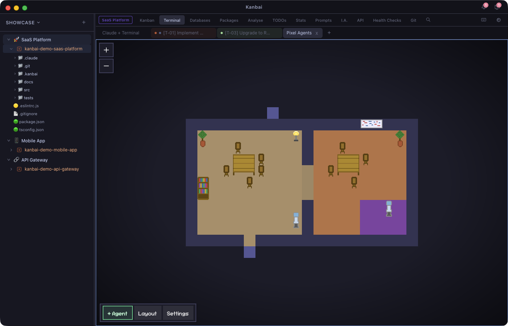
Pixel Agents — Bureau virtuel pixel art avec agents IA animés, bureaux, bibliothèques et décorations personnalisables Pixel Agents — Pixel art virtual office with animated AI agents, desks, bookshelves and customizable decorations
Git
Kanbai intégré une interface Git visuelle complète. Branches, commits, staging, diffs, stash, push — tout est accèssible sans taper une seule commande. L'interface est concu pour les développéurs qui veulent la puissance de Git avec le confort du visuel. Kanbai integrates a complete visual Git interface. Branches, commits, staging, diffs, stash, push — everything is accessible without typing a single command. The interface is designed for developers who want Git's power with visual comfort.
Fonctionnalités Features
Workflow Git typique Typical Git workflow
- Consultez vos branches dans la vue d'ensemble. Les indicateurs ahead/behind vous montrent l'etat de synchronisation Check your branches in the overview. Ahead/behind indicators show you the synchronization state
- Verifiez les fichiers modifiés dans le staging area. Cliquez sur un fichier pour voir le diff Check modified files in the staging area. Click a file to see the diff
- Stagez les fichiers souhaites en cliquant sur le bouton "+" a côté de chaque fichier Stage desired files by clicking the "+" button next to each file
- Redigez votre message de commit et validez avec Cmd+Enter Write your commit message and commit with Cmd+Enter
- Poussez vos changements avec le bouton Push Push your changes with the Push button
Utilisez le stash pour sauvegarder temporairement vos modifications avant de changer de branche. Le panneau Git affiche la liste de vos stashs avec possibilite de les appliquer ou supprimer.Use stash to temporarily save your modifications before switching branches. The Git panel displays your stash list with the ability to apply or delete them.
Operations de branche Branch operations
Toutes les operations de branche sont accèssibles depuis le panneau Git : All branch operations are accessible from the Git panel:
- Checkout — Basculer vers une branche existante Checkout — Switch to an existing branch
- Create — Créer une nouvelle branche a partir de la branche courante Create — Create a new branch from the current branch
- Rename — Renommer une branche locale Rename — Rename a local branch
- Merge — Fusionner une branche dans la branche courante Merge — Merge a branch into the current branch
- Delete — Supprimer une branche locale Delete — Delete a local branch
- Fetch — Recuperer les changements du remote sans les appliquer Fetch — Retrieve changes from remote without applying them
- Pull — Recuperer et appliquer les changements du remote Pull — Retrieve and apply changes from remote
- Push — Envoyér les commits locaux vers le remote Push — Send local commits to remote
- Stash — Sauvegarder temporairement les modifications non committees Stash — Temporarily save uncommitted changes
Le diff viewer inline affiche les ajouts en vert et les suppressions en rouge, similaire a git diff mais avec une interface visuelle plus lisible. Cliquez sur un fichier modifié dans le staging area pour voir ses changements.The inline diff viewer shows additions in green and deletions in red, similar to git diff but with a more readable visual interface. Click a modified file in the staging area to see its changes.
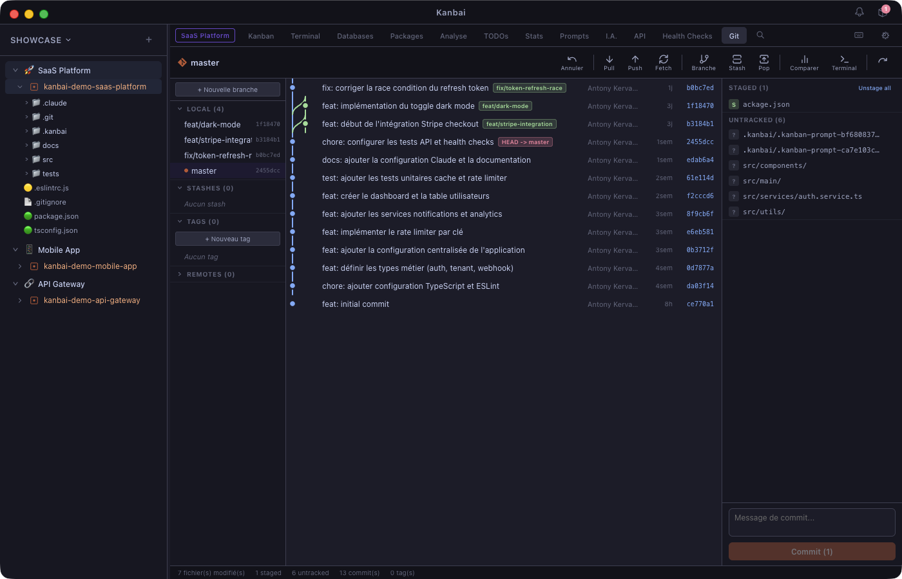
Vue Git : branches locales, historique de commits, zone de staging avec fichiers modifiés et stages, et zone de commit intégrée. Git view: local branches, commit history, staging area with modified and staged files, and integrated commit area.
Kanban
Le Kanban intégré vous permet de gerer vos tâches directement a côté de votre code. Plus besoin d'ouvrir Trello ou Notion — vos tâches vivent dans votre workspace. Et surtout, le Kanban de Kanbai est propulsé par l'IA : envoyéz un ticket a Claude, Codex, Copilot ou Gemini, l'agent le résout automatiquement. The integrated Kanban lets you manage tasks right next to your code. No need to open Trello or Notion — your tasks live in your workspace. And best of all, Kanbai's Kanban is AI-powered: send a ticket to Claude, Codex, Copilot or Gemini, the agent solves it automatically.
Colonnes Columns
5 colonnes adaptees au workflow de développement : 5 columns adapted to development workflow:
- TODO — À faireTo do
- WORKING — En cours (Claude ou vous)In progress (Claude or you)
- PENDING — En attente (Claude à une question)Waiting (Claude has a question)
- DONE — Terminé avec succèsCompleted successfully
- FAILED — Échoué (Claude a rencontre une erreur)Failed (Claude encountered an error)
Fonctionnalités Features
Integration IA (Claude, Codex, Copilot & Gemini) AI integration (Claude, Codex, Copilot & Gemini)
Le Kanban de Kanbai est propulsé par l'IA. Chaque ticket peut être envoyé directement a Claude Code, Codex, Copilot ou Gemini qui le résout automatiquement. Voici le workflow complet : Kanbai's Kanban is AI-powered. Every ticket can be sent directly to Claude Code, Codex, Copilot or Gemini which resolves it automatically. Here is the complete workflow:
- Créez un ticket avec titre, description, priorité et labels Create a ticket with title, description, priority and labels
- Cliquez sur le bouton "Envoyér a Claude" sur le ticket Click the "Send to Claude" button on the ticket
-
Kanbai ouvre un onglet terminal avec Claude Code et lui envoie un fichier prompt (
.kanbai/.kanban-prompt-{id}.md) Kanbai opens a terminal tab with Claude Code and sends it a prompt file (.kanbai/.kanban-prompt-{id}.md) -
Des variables d'environnement sont définies :
KANBAI_KANBAN_TASK_ID,KANBAI_KANBAN_FILEEnvironment variables are set:KANBAI_KANBAN_TASK_ID,KANBAI_KANBAN_FILE - Claude travaille de maniere autonome. Le ticket passe en WORKING Claude works autonomously. The ticket moves to WORKING
-
A la fin, un hook (
kanban-done.sh) met a jour le statut. Le Kanban se rafraichit en temps reel When done, a hook (kanban-done.sh) updates the status. The Kanban refreshes in real-time
Si Claude à une question, le ticket passe en PENDING avec un champ question. Si Claude échoué, le ticket passe en FAILED avec un champ erreur. If Claude has a question, the ticket moves to PENDING with a question field. If Claude fails, the ticket moves to FAILED with an error field.
Planification automatique Automatic scheduling
Quand une session Claude terminé un ticket, elle cherche automatiquement la tâche suivante par ordre de priorité : d'abord les tâches WORKING en cours, puis la prochaine tâche TODO. Pipeline entièrement autonome : créez vos tickets, Claude les traite un par un sans intervention. When a Claude session finishes a ticket, it automatically looks for the next task by priority: first WORKING tasks in progress, then the next TODO task. Fully autonomous pipeline: create your tickets, Claude handles them one by one without intervention.
Synchronisation temps reel Real-time sync
-
File watching (
fs.watch) détecté les changements de Claude ou d'autres editeurs File watching (fs.watch) detects changes from Claude or other editors - Polling de secours toutes les 30 secondes pour la fiabilite Fallback polling every 30 seconds for reliability
- Plusieurs instances Claude peuvent travailler sur differents tickets simultanement Multiple Claude instances can work on different tickets simultaneously
Guide : workflow complet Kanban + Claude AI Guide: complete Kanban + Claude AI workflow
Voici un guide pas a pas pour utilisér le Kanban avec Claude AI pour automatiser la résolution de tâches : Here is a step-by-step guide to using Kanban with Claude AI to automate task resolution:
- Planifiez vos tâches — Créez des tickets avec des descriptions precises. Plus la description est détaillee, meilleur sera le résultat de Claude. Ajoutez des labels (bug, feature, refactor) et une priorité Plan your tasks — Create tickets with precise descriptions. The more detailed the description, the better Claude's result will be. Add labels (bug, feature, refactor) and a priority
- Envoyéz le premier ticket — Cliquez sur "Envoyér a Claude" sur le ticket le plus prioritaire. Un onglet terminal s'ouvre automatiquement Send the first ticket — Click "Send to Claude" on the highest priority ticket. A terminal tab opens automatically
- Observez le travail — Claude travaille de maniere autonome. Le ticket passe en WORKING. Vous pouvez suivre la progression dans le pane terminal Watch the work — Claude works autonomously. The ticket moves to WORKING. You can follow progress in the terminal pane
- Verifiez le résultat — Quand Claude terminé, le ticket passe en DONE. Verifiez le code généré et les tests Verify the result — When Claude finishes, the ticket moves to DONE. Review the generated code and tests
- Gérez les cas speciaux — Si le ticket est en PENDING, Claude à une question : repondez-y. Si le ticket est en FAILED, examinez l'erreur et ajustez la description Handle special cases — If the ticket is PENDING, Claude has a question: answer it. If the ticket is FAILED, examine the error and adjust the description
- Pipeline automatique — Activez la planification automatique pour que Claude enchaine les tickets par ordre de priorité sans intervention Automatic pipeline — Enable automatic scheduling so Claude chains tickets by priority order without intervention
Pour les meilleurs résultats avec Claude, redigez des descriptions de tickets qui incluent : le contexte du probleme, le comportement attendu, les fichiers concernes, et les criteres de validation. Plus le ticket est precis, moins Claude aura besoin de poser des questions.For best results with Claude, write ticket descriptions that include: the problem context, expected behavior, affected files, and validation criteria. The more precise the ticket, the fewer questions Claude will need to ask.
Pieces jointes sur les tickets Ticket attachments
Les pieces jointes enrichissent vos tickets avec du contexte visuel : Attachments enrich your tickets with visual context:
- Upload de fichiers — Glissez un fichier directement sur un ticket ou utiliséz le bouton d'upload File upload — Drag a file directly onto a ticket or use the upload button
- Collage d'images — Pendant l'édition d'un ticket, collez une image depuis le presse-papier avec Cmd+V Image paste — While editing a ticket, paste an image from clipboard with Cmd+V
- Scréénshots — Capturez un screenshot avec macOS (Cmd+Shift+4) puis collez-le directement dans le ticket Screatednshots — Capture a screatednshot with macOS (Cmd+Shift+4) then paste it directly into the ticket
Les pieces jointes sont stockees dans .kanbai/attachments/{taskId}/ et sont accèssibles par Claude lors de la résolution du ticket.
Attachments are stored in .kanbai/attachments/{taskId}/ and are accessible by Claude during ticket resolution.
Les données du Kanban sont stockees localement dans .workspaces/kanban.json. Vous pouvez les versionner dans Git pour partager l'etat du Kanban avec votre equipe. Les pieces jointes sont stockees dans .kanbai/attachments/{taskId}/.Kanban data is stored locally in .workspaces/kanban.json. You can version it in Git to share the Kanban state with your team. Attachments are stored in .kanbai/attachments/{taskId}/.
Mode CTO CTO Mode
Le Mode CTO transforme Claude en directeur technique autonome qui ameliore continuellement votre codebase. Un seul clic sur le bouton "CTO Mode" dans l'en-tête du Kanban créé un ticket special qui ne se terminé jamais — Claude analyse, planifie et implemente des améliorations session apres session. CTO Mode transforms Claude into an autonomous CTO who continuously improves your codebase. A single click on the "CTO Mode" button in the Kanban header creates a special ticket that never ends — Claude analyzes, plans and implements improvements session after session.
Comment ca fonctionne How it works
- Cliquez sur le bouton CTO Mode dans l'en-tête du Kanban Click the CTO Mode button in the Kanban header
-
Un ticket special est créé automatiquement avec le label
ctoet une priorité haute A special ticket is automatically created with thectolabel and high priority - Claude est assigne immediatement et commence a analyser votre projet Claude is assigned immediately and starts analyzing your project
- Il identifie 3 a 5 axes d'amélioration et créé des sous-tickets lies It identifies 3 to 5 improvement axes and creates linked sub-tickets
- Il implemente les quick wins et commite apres chaque amélioration It implements quick wins and commits after each improvement
- En fin de session, le ticket repasse en TODO avec un résumé — pret pour la session suivante At the end of the session, the ticket goes back to TODO with a summary — ready for the next session
Cycle perpetuel Perpetual cycle
Contrairement aux tickets normaux, un ticket CTO ne peut jamais passer en DONE. Il alterne entre TODO et WORKING, session apres session. A chaque nouvelle session, Claude consulte les sous-tickets précédents pour maintenir la continuite et ne pas refaire ce qui a déjà ete fait. Unlike normal tickets, a CTO ticket can never transition to DONE. It alternates between TODO and WORKING, session after session. At each new session, Claude checks previous sub-tickets to maintain continuity and avoid redoing past work.
Identification visuelle Visual identification
- Shimmer anime — Un degrade anime mauve/rose/bleu/turquoise distingue les cartes CTO des tickets normaux Animated shimmer — An animated mauve/pink/blue/teal gradient distinguishes CTO cards from normal tickets
- Halo pulsant — Quand le ticket est en WORKING, un halo mauve pulse autour de la carte Pulsing halo — When the ticket is WORKING, a mauve halo pulses around the card
- Label CTO — Un chip rose/mauve identifie clairement le ticket CTO label — A pink/mauve chip clearly identifies the ticket
- Sidebar — Affiche "CTO MODE" avec un style gradient au lieu de "WORKING" Sidebar — Shows "CTO MODE" with a gradient style instead of "WORKING"
Sous-tickets et continuite Sub-tickets and continuity
Claude créé des sous-tickets via le MCP (kanban_create) avec un parentTicketId. Le ticket parent garde la trace de tous ses childTicketIds. A chaque nouvelle session, Claude lit ces sous-tickets pour savoir ce qui a déjà ete fait et planifier de nouvelles améliorations.
Claude creates sub-tickets via MCP (kanban_create) with a parentTicketId. The parent ticket tracks all its childTicketIds. At each new session, Claude reads these sub-tickets to know what's already been done and plan new improvements.
Désactiver un ticket Disabling a ticket
Clic droit sur n'importe quel ticket pour le désactivér. Les tickets désactivés apparaissent en grise (45% opacite, 40% niveaux de gris), ne peuvent pas être deplaces par drag & drop, et ne sont pas sélectionnés par le scheduler automatique. Clic droit a nouveau pour reactiver. Right-click on any ticket to disable it. Disabled tickets appear grayed out (45% opacity, 40% grayscale), cannot be drag-dropped, and are not selected by the automatic scheduler. Right-click again to re-enable.
Le Mode CTO est ideal pour l'amélioration continue de votre codebase. Activez-le sur un projet mature et laissez Claude identifier les patterns de refactoring, les failles de sécurité, les optimisations de performance et les oublis de documentation — sans effort de votre part.CTO Mode is ideal for continuous improvement of your codebase. Enable it on a mature project and let Claude identify refactoring patterns, security flaws, performance optimizations and documentation gaps — with zero effort from your side.
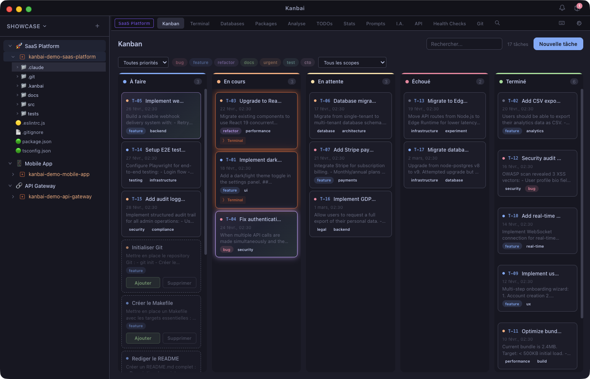
Kanban propulsé par l'IA : 5 colonnes, envoi direct de tickets a Claude AI, Mode CTO pour l'amélioration continue, mise à jour en temps reel, filtres par tags et scopes. AI-powered Kanban: 5 columns, direct ticket dispatch to Claude AI, CTO Mode for continuous improvement, real-time updates, tag and scope filters.
Packages
Le gestionnaire de packages unifié supporte tous les ecosystèmes majeurs : npm, Go, pip, Cargo, NuGet, Composer, Bower. Visualisez, filtrez et mettez a jour vos dépendances dans une interface unique. Et surtout, un chat IA intégré vous assiste pour analyser vos packages, détectér les failles de sécurité et recommander des mises à jour. The unified package manager supports all major ecosystems: npm, Go, pip, Cargo, NuGet, Composer, Bower. View, filter and update your dependencies in a single interface. And best of all, a built-in AI chat assists you in analyzing packages, detecting security vulnerabilities and recommending updates.
Ecosystèmes supportes Supported ecosystems
package.jsonNode.js — detected via package.json
go.modGo — detected via go.mod
requirements.txt / pyproject.tomlPython — detected via requirements.txt / pyproject.toml
Cargo.tomlRust — detected via Cargo.toml
Fonctionnalités Features
Chat IA — assistant packages AI Chat — package assistant
Un panneau de chat redimensionnable en bas de l'onglet Packages vous donne accès à un assistant IA dédié. Posez vos questions en langage naturel et Claude analyse vos dépendances en profondeur. A resizable chat panel at the bottom of the Packages tab gives you access to a dedicated AI assistant. Ask questions in natural language and Claude analyzes your dependencies in depth.
- Analyse de dépendances — "Quels packages dois-je mettre à jour en priorité ?" Dependency analysis — "Which packages should I update first?"
- Audit de sécurité — "Y a-t-il des vulnerabilites connues dans mes dépendances ?" Security audit — "Are there known vulnerabilities in my dependencies?"
- Actions automatiques — Claude peut suggerer des mises à jour qui s'executent automatiquement. Si Claude propose "mettre à jour ces packages", le système les met a jour pour vous Automatic actions — Claude can suggest updates that execute automatically. If Claude suggests "update these packages", the system updates them for you
- Recommandations — "Ce package est-il toujours maintenu ? Existe-t-il une alternative ?" Recommendations — "Is this package still maintained? Is there an alternative?"
Avant de lancer un upgrade global, verifiez les changelogs des packages majeurs. Un upgrade de version majeure peut introduire des changements cassants (breaking changes).Before running a global upgrade, check the changelogs of major packages. A major version upgrade may introduce breaking changes.
Vue Packages : gestionnaire multi-ecosystème avec filtres intelligents, liens directs vers les registres, mises à jour en un clic et chat IA pour l'analyse de dépendances. Packages view: multi-ecosystem manager with smart filters, direct registry links, one-click updates and AI chat for dependency analysis.
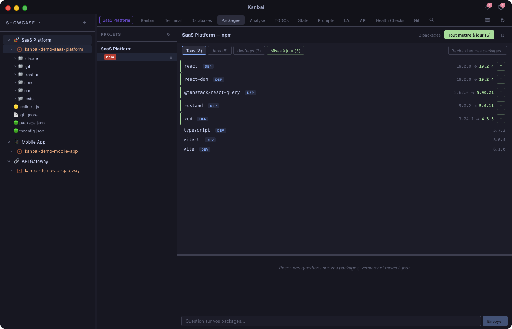
Mises à jour disponibles : 5 packages avec nouvelles versions détectées (react, zustand, zod...), bouton « Tout mettre à jour » pour mise à jour groupée en un clic. Available updates: 5 packages with new versions detected (react, zustand, zod...), "Update all" button for one-click batch updates.
TODO Scanner
Le TODO Scanner parcourt automatiquement votre codebase pour trouver tous les marqueurs de dette technique : TODO, FIXME, HACK, NOTE, XXX. Fini les commentaires oublies dans le code.
The TODO Scanner automatically scans your codebase for all technical debt markers: TODO, FIXME, HACK, NOTE, XXX. No more forgotten comments in code.
Fonctionnalités Features
Utilisez les compteurs du TODO Scanner comme indicateur de sante du projet. Un nombre eleve de FIXME ou HACK signale une dette technique a traiter. Combinez avec le Kanban pour créer des tickets directement depuis les findings.Use the TODO Scanner counters as a project health indicator. A high number of FIXME or HACK signals technical debt to address. Combine with Kanban to create tickets directly from findings.
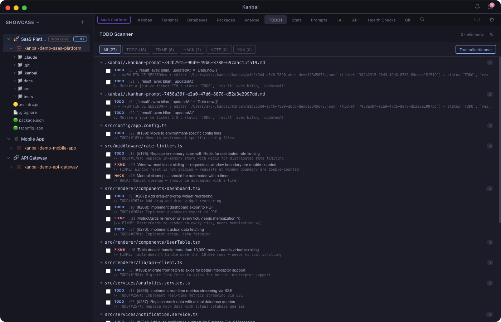
Vue TODO Scanner : scan automatique de toute la codebase, filtres par type (TODO, FIXME, HACK, NOTE, XXX), avec lien direct vers le fichier source. TODO Scanner view: automatic full-codebase scan, filter by type (TODO, FIXME, HACK, NOTE, XXX), with direct link to source file.
Statistiques Statistics
Comprenez votre codebase en un coup d'oeil. Ideal avant un refactoring, un audit ou simplement pour suivre l'evolution de votre projet au fil du temps. Understand your codebase at a glance. Ideal before a refactoring, an audit, or simply to track your project's evolution over time.
Metriques affichees Displayed metrics
Le classement des fichiers les plus volumineux est un excellent point de depart pour identifier les fichiers a refactorer. Les fichiers trop grands sont souvent un signe de responsabilites mixtes.The largest files ranking is an excellent starting point to identify files to refactor. Files that are too large are often a sign of mixed responsibilities.
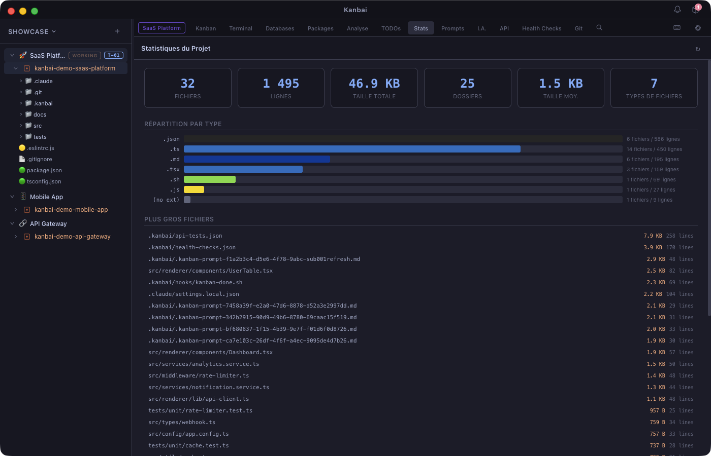
Vue Statistiques : nombre total de fichiers et lignes, repartition par type de fichier avec graphes, et classement des fichiers les plus volumineux. Statistics view: total files and lines count, distribution by file type with graphs, and largest files ranking.
Prompts
La bibliothèque de prompts contient des templates prets à l'emploi, organises par catégorie. Envoyéz-les directement a Claude ou transformez-les en tickets Kanban. Vos meilleures pratiques de développement, à un clic. The prompt library contains ready-to-use templates, organized by category. Send them directly to Claude or turn them into Kanban tickets. Your development best practices, one click away.
Catégories Categorys
- DéveloppementDevelopment — Prompts pour ecrire du code, refactorer, optimiser les performances Prompts to write code, refactor, optimize performance
- QualitéQuality — Prompts pour les tests, la revue de code, l'audit de qualité Prompts for tests, code review, quality audit
- Documentation — Prompts pour générér de la documentation, des commentaires, des README Prompts to generate documentation, comments, READMEs
- DevOps — Prompts pour CI/CD, Docker, déploiement, infrastructure Prompts for CI/CD, Docker, deployment, infrastructure
- GénéralGeneral — Prompts d'usage général pour l'analyse, la planification et l'exploration General-purpose prompts for analysis, planning and exploration
Utilisation Usage
Cliquez sur un prompt pour acceder a trois actions : Click a prompt to access three actions:
- Copier — Copie le prompt dans le presse-papier pour le coller ou vous voulez Copy — Copy the prompt to clipboard to paste wherever you want
- Envoyér a Claude — Ouvre une session Claude Code avec le prompt pre-rempli Send to Claude — Open a Claude Code session with the prompt pre-filled
- Créer un ticket — Transforme le prompt en ticket Kanban pour le traiter plus tard Create a ticket — Turn the prompt into a Kanban ticket to handle later
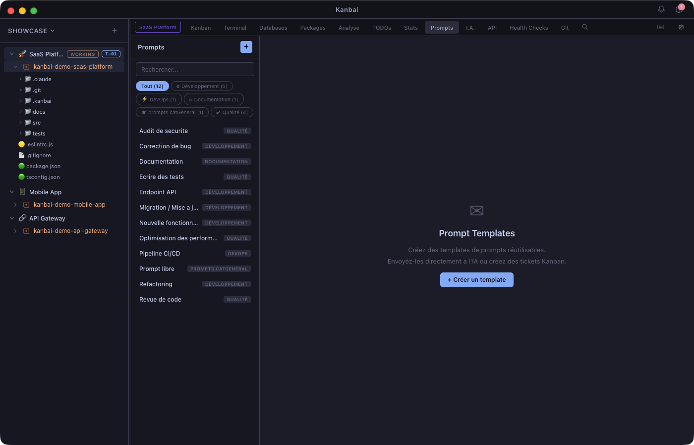
Vue Prompts : bibliothèque de templates organises par catégorie, avec envoi direct a Claude ou creation de ticket Kanban. Prompts view: template library organized by category, with direct send to Claude or Kanban ticket creation.
Database Explorer
L'explorateur de bases de données a ete entièrement repense. Connectéz-vous à vos bases, ecrivez des requêtes dans l'editeur Monaco, et surtout : interrogez vos données en langage naturel grace au chat IA intégré. Claude généré le SQL, l'execute, et vous explique les résultats — le tout sans quitter Kanbai. The database explorer has been completely redesigned. Connect to your databases, write queries in the Monaco editor, and most importantly: query your data in natural language with the built-in AI chat. Claude generates the SQL, executes it, and explains the results — all without leaving Kanbai.
Bases supportees Supported databases
Interface trois panneaux Three-panel interface
L'interface se decoupe en trois zones redimensionnables : The interface is divided into three resizable zones:
- Barre latérale — Liste de connexions avec statut (connecté/déconnecté/erreur), tags d'environnement colores (local, dev, int, qua, prd), et actions (editer, supprimer, reordonner par drag) Sidebar — Connection list with status (connected/disconnected/error), colored environment tags (local, dev, int, qua, prd), and actions (edit, delete, reorder by drag)
- Zone de requêtes — Éditeur Monaco avec coloration syntaxique SQL/JSON, onglets multiples, selecteur de LIMIT (50-1000), badge d'environnement, export CSV, et pagination des résultats Query area — Monaco editor with SQL/JSON syntax highlighting, multiple tabs, LIMIT selector (50-1000), environment badge, CSV export, and result pagination
- Chat IA (NL Chat) — Interrogez vos données en langage naturel. Claude généré le SQL, l'execute, et vous explique les résultats AI Chat (NL Chat) — Query your data in natural language. Claude generates the SQL, executes it, and explains the results
Chat IA — requêtes en langage naturel AI Chat — natural language queries
Le chat IA transforme vos questions en requêtes SQL executables, avec un pipeline intelligent en plusieurs étapes : The AI chat transforms your questions into executable SQL queries, with a multi-step intelligent pipeline:
- Génération SQL — Claude comprend votre question et généré la requête SQL appropriee a partir du schema de la base SQL generation — Claude understands your question and generates the appropriate SQL query from the database schema
- Exécution — La requête est exécutée automatiquement sur la base connectée Execution — The query is automatically executed on the connected database
- Retry intelligent — En cas d'erreur SQL (syntaxe, colonne manquante), Claude corrige automatiquement la requête et reessaye Smart retry — On SQL error (syntax, missing column), Claude automatically corrects the query and retries
- Interpretation — Claude recoit les résultats et généré une réponse humaine expliquant ce que les données signifient Interpretation — Claude receives the results and generates a human-readable answer explaining what the data means
- Raffinement — Si les résultats ne correspondent pas exactement à l'intention, Claude peut affiner la requête automatiquement Refinement — If results don't exactly match the intent, Claude can automatically refine the query
Un bouton "SQL" sur chaque réponse de Claude permet de copier la requête générée directement dans l'editeur. An "SQL" button on each Claude response lets you copy the generated query directly into the editor.
Permissions NL par connexion NL permissions per connection
Chaque connexion dispose de permissions granulaires qui contrôlent ce que Claude peut faire via le chat IA : Each connection has granular permissions that control what Claude can do via the AI chat:
- Lecture (active par défaut) — Claude peut uniquement lire les données (SELECT) Read (enabled by default) — Claude can only read data (SELECT)
- Ecriture — Claude peut modifiér les données (INSERT, UPDATE) Write — Claude can modify data (INSERT, UPDATE)
- Suppression — Claude peut supprimer des données (DELETE, DROP) Delete — Claude can delete data (DELETE, DROP)
Tags d'environnement Environment tags
Chaque connexion porte un tag d'environnement colore pour identifier rapidement la cible : Each connection carries a colored environment tag to quickly identify the target:
- local — Développement localLocal development
- dev — Environnement de développementDevelopment environment
- int — IntegrationIntegration
- qua — Qualification / StagingQualification / Staging
- prd — ProductionProduction
- personnalisécustom — Nom libreCustom name
Le badge d'environnement est affiche dans l'editeur de requêtes et dans la barre latérale, pour ne jamais executer une requête destructrice sur le mauvais environnement. The environment badge is displayed in the query editor and in the sidebar, so you never run a destructive query on the wrong environment.
Backup & Restore Backup & Restore
Sauvegardez et restaurez vos bases de données directement depuis Kanbai : Back up and restore your databases directly from Kanbai:
- Backup — Créez un snapshot de votre base en un clic depuis la barre latérale Backup — Create a snapshot of your database in one click from the sidebar
- Restore — Restaurez un backup vers n'importe quelle connexion Restore — Restore a backup to any connection
- Journal — Un panneau de logs en bas affiche l'historique de toutes les operations de backup/restore avec horodatage et statut Log — A log panel at the bottom shows the history of all backup/restore operations with timestamps and status
Utilisez les permissions NL pour securiser vos connexions de production : activez uniquement la lecture. Ainsi, même si vous posez une question ambigue au chat IA, Claude ne pourra jamais modifiér ou supprimer vos données.Use NL permissions to secure your production connections: enable read-only. This way, even if you ask an ambiguous question to the AI chat, Claude can never modify or delete your data.
Bien que les identifiants soient chiffres, evitez de stocker des connexions vers des bases de production sensibles. Utilisez de preference des bases de développement ou de staging.Although credentials are encrypted, avoid storing connections to sensitive production databases. Preferably use development or staging databases.
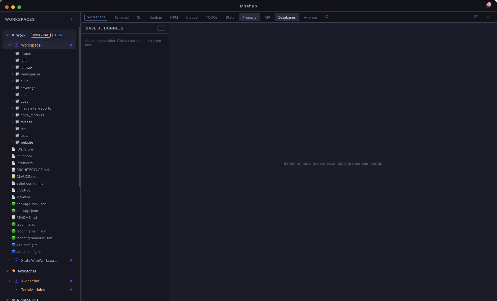
Database Explorer : interface trois panneaux avec barre latérale de connexions, editeur de requêtes Monaco, et chat IA pour interroger vos données en langage naturel. Database Explorer: three-panel interface with connection sidebar, Monaco query editor, and AI chat to query your data in natural language.
Code Analysis
Le panneau Code Analysis fournit un audit complet de la qualité et de la sécurité de votre code. Il détecté automatiquement les outils d'analyse installés sur votre système, les filtre selon les langages de votre projet, et produit des rapports détailles avec note globale. The Code Analysis panel provides a comprehensive quality and security audit of your code. It automatically detects analysis tools installed on your system, filters them by your project's languages, and produces detailed reports with an overall grade.
Détection intelligente des outils Smart tool detection
Kanbai détecté automatiquement les outils d'analyse installés sur votre machine et n'affiche que ceux pertinents pour votre projet, en fonction des langages détectés. Langages supportes : Python, JavaScript, TypeScript, Go, Java, Ruby, C, C++, PHP, Terraform, Kubernetes, Docker, CloudFormation. Les outils universels sont toujours affiches. Kanbai automatically detects analysis tools installed on your machine and only shows those relevant to your project, based on detected languages. Supported languages: Python, JavaScript, TypeScript, Go, Java, Ruby, C, C++, PHP, Terraform, Kubernetes, Docker, CloudFormation. Universal tools are always shown.
Si un outil n'est pas installé, vous pouvez l'installér directement depuis le panneau avec suivi de progression en temps reel. If a tool is not installed, you can install it directly from the panel with real-time progress tracking.
Catégories d'analyse Analysis categorys
Rapports & findings Reports & findings
Chaque analyse produit un rapport détaille avec des findings classes par sévérité : Each analysis produces a detailed report with findings sorted by severity:
- Critical — Problemes bloquants necessitant une correction immediateBlocking issues requiring immediate fix
- High — Problemes importants a corriger rapidementImportant issues to fix soon
- Medium — Ameliorations recommandeesRecommended improvements
- Low — Suggestions mineuresMinor suggestions
- Info — Informations et recommandationsInformation and recommendations
Chaque finding affiche le fichier, la ligne et la colonne exactes, un extrait du code problematique, le nom de la règle, un lien vers la documentation de la règle, et l'identifiant CWE le cas echeant. Cliquez sur un finding pour naviguer directement dans le fichier source. Each finding shows the exact file, line and column, a snippet of the problematic code, the rule name, a link to the rule documentation, and the CWE identifier where applicable. Click a finding to navigate directly to the source file.
Note globale du projet Project-wide grade
Kanbai calcule automatiquement une note de A a F pour votre projet, basee sur le nombre de findings critiques, hauts et moyens. La note est affichee en permanence dans l'en-tête du panneau. Kanbai automatically calculates a grade from A to F for your project, based on the number of critical, high and medium findings. The grade is displayed permanently in the panel header.
Creation de tickets Kanban Kanban ticket creation
Sélectionnez les findings a corriger et créez des tickets Kanban en masse. Plusieurs modes de regroupement disponibles : Select the findings to fix and create Kanban tickets in bulk. Several grouping modes available:
- Individuel — Un ticket par findingIndividual — One ticket per finding
- Par fichier — Regrouper les findings du même fichierBy file — Group findings from the same file
- Par règle — Regrouper les violations de la même règleBy rule — Group violations of the same rule
- Par sévérité — Regrouper par niveau de sévéritéBy severity — Group by severity level
Les tickets créés peuvent ensuite être envoyés directement a Claude AI pour correction automatique depuis le Kanban. Created tickets can then be sent directly to Claude AI for automatic fix from the Kanban board.
Guide : pipeline de qualité automatise Guide: automated quality pipeline
Combinez Code Analysis, Kanban et Claude AI pour un pipeline de correction automatique : Combine Code Analysis, Kanban and Claude AI for an automated fix pipeline:
- Lancez une analyse — Ouvrez le panneau Code Analysis et exécutez les outils pertinents pour votre projet Run an analysis — Open the Code Analysis panel and run the relevant tools for your project
- Examinez les findings — Triez par sévérité (Critical d'abord) et examinez les problemes détectés Review findings — Sort by severity (Critical first) and examine detected issues
- Sélectionnez les findings a corriger — Cochez les findings et choisissez un mode de regroupement (par fichier, par règle ou par sévérité) Select findings to fix — Check the findings and choose a grouping mode (by file, by rule or by severity)
- Créez les tickets Kanban — Cliquez sur "Créer tickets" pour générér des tickets avec les détails des findings Create Kanban tickets — Click "Create tickets" to generate tickets with finding details
- Envoyéz a Claude — Depuis le Kanban, envoyéz les tickets a Claude pour correction automatique Send to Claude — From the Kanban, send tickets to Claude for automatic fix
- Relancez l'analyse — Apres les corrections de Claude, relancez une analyse pour vérifier que les problemes sont resolus Re-run analysis — After Claude's fixes, re-run an analysis to verify issues are resolved
La note du projet (A-F) est recalculee apres chaque analyse. Suivez l'evolution de votre note au fil du temps pour mesurer l'amélioration de la qualité du code. Visez une note A pour un code de production.The project grade (A-F) is recalculated after each analysis. Track your grade evolution over time to measure code quality improvement. Aim for an A grade for production code.
Installér des outils manquants Installing missing tools
Si un outil d'analyse n'est pas installé sur votre système, Kanbai affiche un bouton "Installér" a côté de son nom. L'installation se fait directement depuis le panneau avec suivi de progression en temps reel. Les outils sont installés via les gestionnaires de packages standard (npm, pip, brew, go install, etc.). If an analysis tool is not installed on your system, Kanbai displays an "Install" button next to its name. Installation is done directly from the panel with real-time progress tracking. Tools are installed via standard package managers (npm, pip, brew, go install, etc.).
Combinez Code Analysis + Kanban + Claude AI pour un workflow de correction automatique : analysez votre code, créez des tickets depuis les findings, et laissez Claude les resoudre. Pipeline de qualité entièrement automatise.Combine Code Analysis + Kanban + Claude AI for an automatic fix workflow: analyze your code, create tickets from findings, and let Claude solve them. Fully automated quality pipeline.
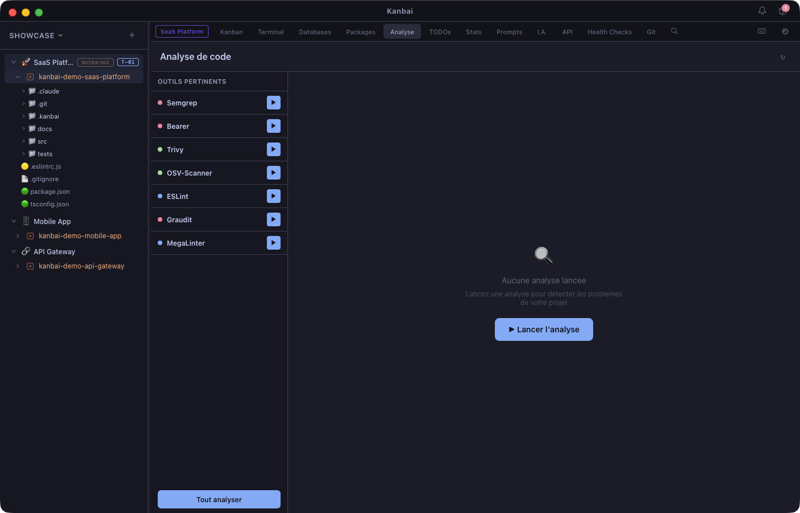
Panneau Code Analysis : outils détectés automatiquement, findings classes par sévérité avec extraits de code, note globale du projet (A-F), et creation de tickets Kanban en masse. Code Analysis panel: auto-detected tools, findings sorted by severity with code snippets, project-wide grade (A-F), and bulk Kanban ticket creation.
API Tester
Un client API complet intégré directement dans Kanbai. Organisez vos requêtes en collections, gerez plusieurs environnements et validez vos réponses avec des assertions automatiques. Fini les allers-retours avec Postman ou Insomnia. A full API client built right into Kanbai. Organize requests into collections, manage multiple environments and validate responses with automated assertions. No more switching to Postman or Insomnia.
Requêtes HTTP HTTP requests
Collections
Organisez vos requêtes en collections nommees. Chaque collection regroupe un ensemble de requêtes liees (par exemple, toutes les routes d'une API). Créez, renommez, dupliquez et supprimez des collections depuis la barre latérale. Organize your requests into named collections. Each collection groups related requests together (e.g., all routes of an API). Create, rename, duplicate and delete collections from the sidebar.
Environnements & variables Environments & variables
Definissez plusieurs environnements (dev, staging, production) avec des variables cle-valeur. Sélectionnez l'environnement actif et les variables sont automatiquement substituees dans vos URLs, headers et body. Define multiple environments (dev, staging, production) with key-value variables. Select the active environment and variables are automatically substituted in your URLs, headers and body.
Definissez une variable {{base_url}} dans chaque environnement (ex: http://localhost:3000 pour dev, https://api.staging.example.com pour staging). Ainsi, vous changez d'environnement en un clic sans modifiér vos requêtes.Define a {{base_url}} variable in each environment (e.g., http://localhost:3000 for dev, https://api.staging.example.com for staging). This way, you switch environments in one click without modifying your requests.
Assertions & tests automatiques Assertions & automated tests
Ajoutez des assertions sur chaque requête pour valider automatiquement les réponses : Add assertions on each request to automatically validate responses:
- Code de statut — Vérifier que la réponse retourne le code attendu (200, 404, etc.) Status code — Verify the response returns the expected code (200, 404, etc.)
- Body contains — Vérifier la presence d'une chaine dans le body Body contains — Check for a string in the response body
- Header contains — Vérifier la presence d'un header spécifique Header contains — Check for a specific response header
- JSON Path — Evaluer un chemin JSON et vérifier sa valeur JSON Path — Evaluate a JSON path and check its value
- Temps de réponse — S'assurer que la réponse arrive sous un seuil (ex. < 500ms) Response time — Ensure response arrives under a threshold (e.g. < 500ms)
Les résultats s'affichent dans un onglet dédié avec des badges pass/fail visuels. Results display in a dedicated tab with visual pass/fail badges.
Import / Export
Exportez l'integralite de vos tests API (collections et environnements) vers un fichier pour le partager avec votre equipe ou le versionner dans Git. Importez un fichier existant pour reprendre le travail d'un collegue. Export your entire API test suite (collections and environments) to a file to share with your team or version in Git. Import an existing file to pick up a colleague's work.
Guide : configurér votre premiere collection API Guide: setting up your first API collection
- Créez une collection — Dans la barre latérale du panneau API, cliquez sur "Nouvelle collection" et donnez-lui un nom (ex: "Auth API") Create a collection — In the API panel sidebar, click "New collection" and name it (e.g., "Auth API")
-
Configurez un environnement — Créez un environnement "dev" avec les variables
base_url=http://localhost:3000etapi_key= votre cle Set up an environment — Create a "dev" environment with variablesbase_url=http://localhost:3000andapi_key= your key -
Ajoutez votre premiere requête — Sélectionnez la méthode (GET), entrez l'URL
{{base_url}}/api/health, et exécutez Add your first request — Select the method (GET), enter the URL{{base_url}}/api/health, and execute - Ajoutez des assertions — Par exemple, status code = 200 et body contains "ok" Add assertions — For example, status code = 200 and body contains "ok"
- Exportez — Exportez la collection pour la partager avec votre equipe ou la versionner dans Git Export — Export the collection to share with your team or version in Git
Les variables d'environnement sont substituees partout : dans les URLs, les headers, le body des requêtes et même dans les valeurs des assertions. Utilisez la syntaxe {{variable_name}} pour referencer une variable.Environment variables are substituted everywhere: in URLs, headers, request body and even in assertion values. Use the {{variable_name}} syntax to reference a variable.
Indicateurs visuels de réponse Response visual indicators
Chaque réponse affiche trois indicateurs visuels pour une lecture instantanee : Each response displays three visual indicators for instant reading:
- Code HTTP colore — Vert pour 2xx (succès), bleu pour 3xx (redirection), orange pour 4xx (erreur client), rouge pour 5xx (erreur serveur) Color-coded HTTP code — Green for 2xx (success), blue for 3xx (redirect), orange for 4xx (client error), red for 5xx (server error)
- Temps de réponse — Affiche en millisecondes avec code couleur (vert < 200ms, orange < 1s, rouge > 1s) Response time — Displayed in milliseconds with color coding (green < 200ms, orange < 1s, red > 1s)
- Taille de la réponse — Taille du body en KB/MB pour identifier les réponses trop volumineuses Response size — Body size in KB/MB to identify responses that are too large
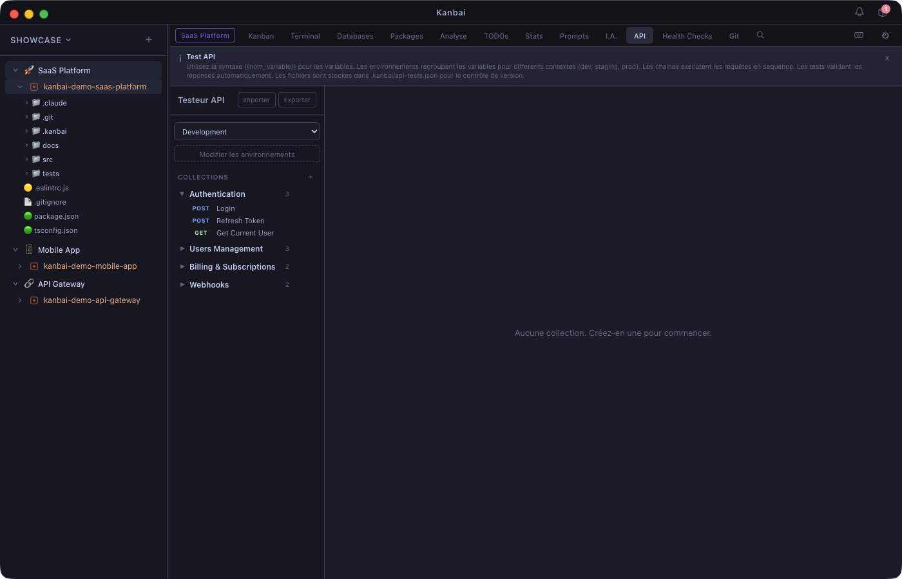
Client API intégré : collections de requêtes dans la barre latérale, configuration des headers et body, réponses JSON formatees avec assertions automatiques et environnements multiples. Built-in API client: request collections in the sidebar, header and body configuration, formatted JSON responses with automated assertions and multiple environments.
Health Checks
Surveillez la disponibilite de vos endpoints en continu. Kanbai embarque un moniteur de sante dédié avec scheduler intégré, historique détaille et détection automatique des incidents. Configure par projet, il tourne en arrière-plan et vous alerte des qu'un service tombe. Monitor your endpoints' availability continuously. Kanbai ships a dedicated health monitor with a built-in scheduler, detailed history and automatic incident detection. Configured per project, it runs in the background and alerts you as soon as a service goes down.
Configuration des checks Check configuration
Scheduler
Chaque check peut être execute manuellement ou planifie via le scheduler intégré. Configurez l'intervalle de vérification (en secondes, minutes ou heures) et optionnellement un intervalle different quand le service est en panne. Demarrez ou arretez le scheduler d'un clic — un badge dans la barre latérale indique l'etat en temps reel. Each check can be run manually or scheduled via the built-in scheduler. Configure the check interval (in seconds, minutes or hours) and optionally a different interval when the service is down. Start or stop the scheduler with one click — a badge in the sidebar shows real-time status.
Utilisez un intervalle court pour le "down interval" (ex. 10 secondes) et un intervalle plus long pour le check normal (ex. 5 minutes). Ainsi, vous détectéz rapidement quand un service remonte apres une panne sans surcharger vos endpoints en temps normal.Use a short interval for the "down interval" (e.g. 10 seconds) and a longer one for the normal check (e.g. 5 minutes). This way, you quickly detect when a service recovers from an outage without overloading your endpoints during normal operation.
Historique & incidents History & incidents
Chaque exécution est enregistrée dans un historique pagine : code de statut, temps de réponse, succès ou echec, et message d'erreur le cas echeant. Les incidents sont détectés automatiquement — quand un check échoué consecutivement, un incident est ouvert avec horodatage, compteur d'echecs et durée. Quand le service remonte, l'incident est automatiquement clos. Every execution is logged in a paginated history: status code, response time, success or failure, and error message when applicable. Incidents are detected automatically — when a check fails consecutively, an incident is opened with timestamp, failure count and duration. When the service recovers, the incident is automatically closed.
Indicateurs visuels Visual indicators
Chaque check dans la barre latérale affiche un indicateur colore en temps reel : Each check in the sidebar displays a real-time color indicator:
- Vert (up) — L'endpoint repond avec le code attendu Green (up) — The endpoint responds with the expected code
- Rouge (down) — L'endpoint est en echec ou inaccèssible Red (down) — The endpoint is failing or unreachable
- Bleu (checking) — Vérification en cours Blue (checking) — Check in progress
- Gris (unknown) — Aucun check execute ou scheduler arrete Grey (unknown) — No check executed or scheduler stopped
Import / Export
Exportez vos configurations de health checks vers un fichier JSON pour les partager avec votre equipe ou les versionner dans Git. Importez un fichier existant pour reprendre la configuration d'un collegue. L'historique et les incidents sont inclus dans l'export. Export your health check configurations to a JSON file to share with your team or version in Git. Import an existing file to pick up a colleague's configuration. History and incidents are included in the export.
Guide : configurér votre premier health check Guide: setting up your first health check
- Créez un check — Cliquez sur le bouton "+" dans la barre latérale pour ajouter un nouveau health check Create a check — Click the "+" button in the sidebar to add a new health check
-
Configurez l'endpoint — Donnez un nom, entrez l'URL (ex.
https://api.example.com/health), sélectionnez la méthode (GET ou HEAD) et le code attendu (200) Configure the endpoint — Give it a name, enter the URL (e.g.https://api.example.com/health), select the method (GET or HEAD) and expected code (200) - Planifiez les vérifications — Activez le schedule, définissez l'intervalle (ex. 5 minutes) et optionnellement un intervalle accelere quand le service est down Schedule checks — Enable the schedule, set the interval (e.g. 5 minutes) and optionally a faster interval when the service is down
- Demarrez le scheduler — Cliquez sur "Démarrer les checks" dans la barre latérale pour lancer la surveillance en arrière-plan Start the scheduler — Click "Start checks" in the sidebar to begin background monitoring
- Suivez les résultats — Consultez l'historique et les incidents dans le panneau principal pour chaque check Track results — Review history and incidents in the main panel for each check
Le scheduler demarre automatiquement à l'ouverture du projet si des checks avec un schedule actif existent. Vous n'avez pas besoin de le relancer manuellement à chaque session.The scheduler starts automatically when the project opens if checks with an active schedule exist. You don't need to restart it manually each session.
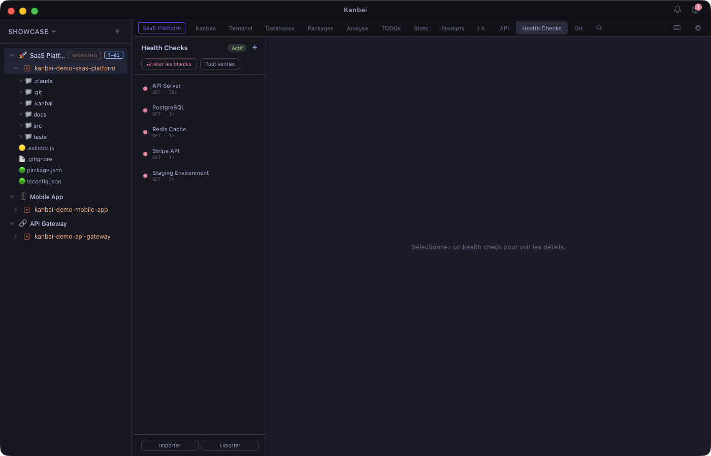
Moniteur de sante intégré : liste des checks dans la barre latérale avec indicateurs de statut, scheduler configurable, historique des exécutions et détection automatique des incidents. Built-in health monitor: check list in the sidebar with status indicators, configurable scheduler, execution history and automatic incident detection.
Mises à jour Updates
Kanbai gere deux types de mises à jour : les mises à jour de l'application elle-même et la surveillance des outils de développement installés sur votre système. Kanbai manages two types of updates: updates to the application itself and monitoring of development tools installed on your system.
Mises à jour de l'application Application updates
Kanbai verifie automatiquement la disponibilite de nouvelles versions. Quand une mise à jour est disponible : Kanbai automatically checks for new versions. When an update is available:
- Une notification modale s'affiche avec les détails de la nouvelle version A notification modal appears with details of the new version
- Cliquez sur "Télécharger" pour lancer le téléchargement avec barre de progression Click "Download" to start the download with progress bar
- Une fois le téléchargement terminé, cliquez sur "Installér et redémarrer" Once the download is complete, click "Install and restart"
- Kanbai redemarre automatiquement avec la nouvelle version Kanbai automatically restarts with the new version
Surveillance des outils Tool monitoring
Kanbai surveille aussi les versions de vos outils de développement et vous notifie des mises à jour disponibles : Kanbai also monitors your development tools' versions and notifies you of available updates:
- Node.js — Version actuelle vs dernière version LTSCurrent version vs latest LTS version
- npm — Version actuelle vs dernière version stableCurrent version vs latest stable version
- Claude Code — Dernière version disponibleLatest available version
- Git — Version actuelle vs dernière versionCurrent version vs latest version
- RTK — Token-optimized CLI proxyToken-optimized CLI proxy
- Pixel Agents — Installation et mises à jour du bureau virtuel pixel artInstallation and updates for the pixel art virtual office
Chaque outil affiche sa version actuelle, la dernière version disponible, et un bouton d'installation en un clic avec suivi de progression en temps reel. Each tool displays its current version, the latest available version, and a one-click install button with real-time progress tracking.
La vérification automatique des mises à jour se fait au démarrage de l'application. Vous pouvez aussi forcer une vérification manuelle depuis les préférences.Automatic update checking happens at application startup. You can also force a manual check from the preferences.
Raccourcis clavier Keyboard shortcuts
Kanbai est concu pour être utilisé au clavier. Maitrisez ces raccourcis pour naviguer à la vitesse de la pensee. Kanbai is designed for keyboard use. Master these shortcuts to navigate at the speed of thought.
Terminal
| RaccourciShortcut | ActionAction |
|---|---|
| Cmd+T | Nouvel onglet terminalNew terminal tab |
| Cmd+W | Fermer le pane actif (ou l'onglet si un seul pane)Close active pane (or tab if single pane) |
| Cmd+D | Split horizontal (pane a droite)Horizontal split (pane to the right) |
| Cmd+Shift+D | Split vertical (pane en dessous)Vertical split (pane below) |
| Cmd+Shift+Enter | Zoom/dezoom le pane actifZoom/unzoom active pane |
| Cmd+Alt+fleches | Naviguer entre les panesNavigate between panes |
| Cmd+Shift+[ / ] | Onglet précédent / suivantPrevious / next tab |
| Cmd+1 ... Cmd+9 | Aller à l'onglet NJump to tab N |
Workspace
| RaccourciShortcut | ActionAction |
|---|---|
| Cmd+Shift+N | Créer un nouveau workspaceCreate new workspace |
Fichiers & Éditeur Files & Editor
| RaccourciShortcut | ActionAction |
|---|---|
| Cmd+S | Sauvegarder le fichierSave file |
| Cmd+clic | Sélectionnér un fichier pour la comparaison diff (2 max)Select file for diff comparison (2 max) |
Git
| RaccourciShortcut | ActionAction |
|---|---|
| Cmd+Enter | Commit (dans la zone de message)Commit (in the message area) |
Général General
| RaccourciShortcut | ActionAction |
|---|---|
| Escape | Fermer la modale / annulerClose modal / cancel |
| Enter | Confirmer l'actionConfirm action |
Les raccourcis Terminal de Kanbai sont inspires de iTerm2 et VS Code pour une transition naturelle. Cmd+D pour split et Cmd+T pour nouvel onglet sont les deux raccourcis les plus utilisés.Kanbai's terminal shortcuts are inspired by iTerm2 and VS Code for a natural transition. Cmd+D for split and Cmd+T for new tab are the two most used shortcuts.
FAQ
Questions frequemment posées sur Kanbai. Frequently asked questions about Kanbai.
Comment installér Claude Code ? How to install Claude Code?
Claude Code s'installé via npm : npm install -g @anthropic-ai/claude-code. Vous aurez besoin d'un compte Anthropic et d'une cle API. Consultez la documentation officielle pour le guide complet. Kanbai détecté automatiquement Claude Code une fois installé.
Claude Code is installed via npm: npm install -g @anthropic-ai/claude-code. You will need an Anthropic account and an API key. See the official documentation for the complete guide. Kanbai automatically detects Claude Code once installed.
Ou sont stockees les données de Kanbai ? Where is Kanbai data stored?
Kanbai stocke ses données dans deux emplacements : les configurations d'application dans ~/Library/Application Support/Kanbai/ et les environnements de workspace dans ~/.kanbai/envs/. Les données spécifiques à chaque projet (Kanban, connexions de base de données, etc.) sont stockees dans le dossier .workspaces/ à la racine du workspace.
Kanbai stores its data in two locations: application configurations in ~/Library/Application Support/Kanbai/ and workspace environments in ~/.kanbai/envs/. Project-specific data (Kanban, database connections, etc.) is stored in the .workspaces/ folder at the workspace root.
Kanbai fonctionne-t-il hors ligne ? Does Kanbai work offline?
Oui, la plupart des fonctionnalités fonctionnent hors ligne : Terminal, Git (operations locales), Kanban, File Viewer, TODO Scanner, Statistiques et Code Analysis. Les fonctionnalités qui nécessitent une connexion sont : Claude AI (API Anthropic), Codex (API OpenAI), Copilot (API GitHub), Gemini (API Google), les mises à jour de l'application, les health checks de l'API Tester, et les connexions à des bases de données distantes. Yes, most features work offline: Terminal, Git (local operations), Kanban, File Viewer, TODO Scanner, Statistics and Code Analysis. Features that require a connection are: Claude AI (Anthropic API), Codex (OpenAI API), Copilot (GitHub API), Gemini (Google API), application updates, API Tester health checks, and remote database connections.
Comment reinitialiser les paramêtres de Kanbai ? How to reset Kanbai settings?
Pour reinitialiser les paramêtres, supprimez le dossier ~/Library/Application Support/Kanbai/. Attention : cela supprimera toutes vos configurations de workspaces, connexions de base de données sauvegardees et préférences. Les fichiers de vos projets ne sont pas affectes.
To reset settings, delete the ~/Library/Application Support/Kanbai/ folder. Warning: this will remove all your workspace configurations, saved database connections and preferences. Your project files are not affected.
Sauvegardez le dossier avant de le supprimer si vous souhaitez pouvoir restaurer vos paramêtres.Back up the folder before deleting it if you want to be able to restore your settings.
Peut-on lancer plusieurs sessions Claude simultanement ? Can multiple Claude sessions run simultaneously?
Oui. Chaque pane terminal est independant, et vous pouvez lancer Claude Code dans plusieurs panes simultanement. C'est particulierement utile avec le Kanban : Claude peut traiter plusieurs tickets en parallele, chacun dans son propre pane terminal. Yes. Each terminal pane is independent, and you can launch Claude Code in multiple panes simultaneously. This is particularly useful with Kanban: Claude can process multiple tickets in parallel, each in its own terminal pane.
Problemes de connexion à la base de données ? Database connection issues?
Verifiez les points suivants : Check the following:
- Le serveur de base de données est bien demarre et accèssible The database server is running and accessible
- Le host, le port et les identifiants sont corrects The host, port and credentials are correct
- Le firewall ne bloque pas la connexion The firewall is not blocking the connection
-
Pour PostgreSQL et MySQL, verifiez que le fichier
pg_hba.confou la configuration MySQL autorise les connexions depuis localhost For PostgreSQL and MySQL, verify thatpg_hba.confor MySQL configuration allows connections from localhost -
Pour SQLite, verifiez que le chemin vers le fichier
.dbest correct et que Kanbai à les permissions de lecture For SQLite, verify that the path to the.dbfile is correct and that Kanbai has read permissions
Comment signaler un bug ? How to report a bug?
Ouvrez une issue sur le dépôt GitHub de Kanbai. Incluez votre version de macOS, votre version de Kanbai, les étapes pour reproduire le probleme, et si possible des screenshots ou des logs (accèssibles via Console.app en filtrant par "Kanbai").
Open an issue on the Kanbai GitHub repository. Include your macOS version, your Kanbai version, steps to reproduce the issue, and if possible screatednshots or logs (accessible via Console.app filtering by "Kanbai").
Quelles permissions macOS sont nécessaires ? What macOS permissions are required?
Kanbai peut demander les permissions suivantes : Kanbai may request the following permissions:
- Accès au dossier Documents — Pour acceder à vos projets situes dans Documents Documents folder access — To access your projects located in Documents
- Accès au dossier Téléchargements — Pour les mises à jour automatiques Downloads folder access — For automatic updates
- Accès complet au disque — Optionnel, pour acceder à des projets dans des emplacements proteges Full disk access — Optional, to access projects in protected locations
Ces permissions sont gérées dans Préférences Système > Sécurité et confidentialite > Confidentialite. These permissions are managed in System Preferences > Security & Privacy > Privacy.
Comment configurér les mises à jour automatiques ? How to configured auto-updates?
Les mises à jour automatiques sont activées par défaut. Kanbai verifie la disponibilite d'une nouvelle version à chaque démarrage. Si vous preferez mettre à jour manuellement, vous pouvez telecharger la dernière version depuis la page des releases GitHub. Automatic updates are enabled by default. Kanbai checks for a new version at each startup. If you prefer to update manually, you can download the latest version from the GitHub releases page.
Comment utilisér Kanbai avec un monorepo ? How to use Kanbai with a monorepo?
Créez un workspace contenant le dossier racine du monorepo. Kanbai détectéra automatiquement tous les sous-projets. Le terminal et Claude Code auront accès à l'ensemble du monorepo. Si votre monorepo contient des packages independants (ex: Lerna, Turborepo, pnpm workspaces), chaque package sera visible dans l'arborescence de fichiers. Create a workspace containing the monorepo root folder. Kanbai will automatically detect all sub-projects. The terminal and Claude Code will have access to the entire monorepo. If your monorepo contains independent packages (e.g., Lerna, Turborepo, pnpm workspaces), each package will be visible in the file tree.
Quelle est la difference entre les profils et les skills Claude ? What is the difference between Claude profiles and skills?
Les profils définissent la personnalite et le comportement global de Claude (ex: "Revue de code" transforme Claude en auditeur de qualité). Ils modifiént le fichier CLAUDE.md. Les skills sont des slash commands que Claude peut utilisér (ex: /commit généré un commit). Ils sont déployés dans le dossier .claude/commands/. Vous pouvez combiner un profil et plusieurs skills pour un setup optimal.
Profiles define Claude's personality and overall behavior (e.g., "Code Review" turns Claude into a quality auditor). They modify the CLAUDE.md file. Skills are slash commands that Claude can use (e.g., /commit generates a commit). They are deployedd to the .claude/commands/ folder. You can combine a profile with multiple skills for an optimal setup.